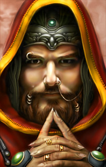
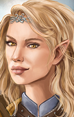
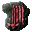

The Artisan's Kitpack
Choose a class to reveal the selection of new or revised kits.
This mod is a selection of new or revised kits made by myself, including some revisions of base classes. The design inspiration is derived from a variety of sources including a various other video games, later editions of D&D, and some of my own imagination.
It should be noted that this mod is mostly a hub for my personal experimentation regarding unexplored, potential mechanics in the engine and not an example of balanced design. Kits are designed to fulfill a specific fantasy or gameplan above all else. If seeking a challenge, these kits are best combined with difficulty-enhancing mods rather than on their own.
Several of the more complex kits, particularly those trying to imitate non-standard multi-classes such as the Enlightened Fist, Sacred Fist and sorcerer variants of the Arcane Trickster and Eldritch Knight, require EEex. Some kits, while not dependent on it, make use of its functions to provide additional benefits that are otherwise unavailable, such as thieving skills for kits of non-thief classes.
Some kits have certain effects which rely on batch updating all files of a certain category. To ensure compatibility with mod content installed after the kitpack, install any relevant components in the the Setup-ArtisansKitpack_tweak.exe program at the very end of your install order.
Aside from new kits for the player character, some kits are also applicable to party members that I deem thematically accurate. These may be chosen though installing the Setup-ArtisansKitpack_npc.exe program, and the current options are as follows:
 Ajantis |
 Cernd |

Edwin |

by Skitia |
 Hexxat |
 Imoen |
 Jan |
 Khalid |
 Mazzy |
|
 M'Khiin |
 Rasaad |
 Xan |


FIGHTER: The Fighter is a champion, swordsman, soldier, and brawler who lives or dies by their knowledge of weapons and tactics. Fighters can be found at the front of any battle, contesting toe-to-toe with monsters and villains. Through extensive training and experience, a Fighter may master many weapons throughout lifetime. A good Fighter needs to be strong and healthy if hopes to survive.
CLASS FEATURES:
– May wear helmets.
– May wear any armor and use any weapon.
– May achieve Grand Mastery (five slots) with any weapon class.
– May achieve Specialization (two slots) in any fighting style and allocate three slots in Two-Weapon Style.
– 5th level: May use the Power Attack and Expertise modal abilities. Only one of the two may be activated at any time.
POWER ATTACK: The Fighter forgoes accuracy for heavier, more damaging blows, sacrificing 3 points of melee THAC0 to increase their melee damage by 3. The Fighter must have 17 or greater Strength to activate this ability.
EXPERTISE: The Fighter focuses on defense at the expense of accuracy, sacrificing 3 points of THAC0 to increase their Armor Class by 3. The Fighter must have 15 or greater Intelligence to activate this ability.
– 6th level: May use the Rapid Shot modal ability.
RAPID SHOT: The Fighter may make an additional ranged attack per round at a -4 penalty to hit.
– 12th level: Improved Rapid Shot: The Fighter’s penalty to hit while Rapid Shot is active is reduced to -2.
– 14th level: May use Improved Power Attack and Improved Expertise, which provide 6 points to the original abilities' bonuses and penalties.
– 16th level: Gains Specialization in all weapons that the Fighter is not already Specialized or greater in.
– 20th level: Improved Initiative: The Fighter gains a bonus half attack per round.
– Hit Die: d10
Prime Requisites For Dual-Classing: Strength
BERSERKER: This is a warrior who is in tune with their animalistic side and, during combat, can achieve an ecstatic state of mind that will enable them to fight longer, harder, and more savagely than any person has a right to. Berserkers tend to be barbarian-like in nature, but not always. Sometimes it is a conscious choice that a warrior in training makes. Regardless, opponents on the battlefield will be unsettled when they see the savage and inhuman elements of the Berserker's personality. This class is common amongst dwarves, known to them as the Battlerager.
Advantages:
– Immunity to fear, morale failure and involuntary berserk effects.
– Gains the In Extremis passive effect.
IN EXTREMIS: Berserkers revel in the thrill of carnage to a sadomasochistic degree, and fight harder when approaching death while most warriors would falter or retreat. While powerful, the berserker's technique is a double-edged sword – as the berserker accumulates more wounds in battle, their blows become increasingly deadly, yet their defense falters, becoming more vulnerable to further damage.
>75% Hit Points: +2 to melee THAC0 and Damage, -2 penalty to Armor Class
>50% Hit Points: +4 to melee THAC0 and Damage, -4 penalty to Armor Class
>25% Hit Points: +8 to melee THAC0 and Damage, -6 penalty to Armor Class
– May use the Enrage ability once per day. Gains one use at level 1 and an additional use every 4 levels thereafter.
ENRAGE: The berserker taps into their frenzy though sheer force of will. For the next two rounds, they gain +15 maximum hit points, loses one hit point per second, and deals an additional +5% slashing, piercing and crushing damage for every 5% of their missing hit points (+100% at one hit point). If the remaining duration of Enrage is less than one round, melee attacks made by the berserker reset Enrage's duration to one round up to a maximum total duration of ten rounds. The hit point loss from Enrage will not reduce the berserker's hit points below one. The berserker cannot cast spells while Enraged.
– From 4th level onwards, may use the Reckless Frenzy ability at will.
RECKLESS FRENZY: The berserker deliberately injures self, instantly reducing their hit points to 70%, 45% or 20% of maximum. This ability has no effect if used while the berserker is already below the selected value.
– From 7th level onwards, the berserker gains +2/+4/+8 to their movement rate while under the effects of In Extremis.
– From 10th level onwards, the berserker's trance-like state makes them more likely to shrug off debilitating effects, gaining +2/+4/+8 to all Saving Throws while under the effects of In Extremis.
– From 14th level onwards, the berserker gains +0.5/+1/+2 bonus attacks per round while under the effects of In Extremis.
– From 20th level onwards, the berserker gains a +1/+3/+5 luck bonus to rolls on damage dealt and received while under the effects of In Extremis.
Disadvantages:
– Becomes winded for five rounds after using Enrage, suffering a -2 penalty to Armor Class, to-hit rolls, and damage rolls. Additionally, the berserker is unable to Enrage or gain the benefits of In Extremis while winded.
– May not Specialize in ranged weapons.
– (Fighter Overhaul) May not use Expertise or Rapid Shot.
– (Fighter Overhaul) Does not gain Specialization in all weapons at 16th level.
– Alignment restricted to any non-lawful.
High Level Abilities
Extend Rage
The berserker's proficiency in their wild fighting style allows them to maintain the effects of their rage for longer, permanently extending the maximum total duration of Enrage to 20 rounds.
Hardiness
High Level Abilities
Extend Rage
The berserker's proficiency in their wild fighting style allows them to maintain the effects of their rage for longer, permanently extending the maximum total duration of Enrage to 20 rounds.
Hardiness
WIZARD SLAYER: This warrior has been specially trained by their sect to excel in hunting and combating spellcasters of all kinds, developing an innate power to nullify and disrupt magical energies of all kinds. Under specific situations, the Wizard Slayer may even use this power more offensively, unleashing powerful blows against non-magic users. This energy, however, has the unfortunate side-effect of negating the benefits of many magical items, rendering them useless in their hands.
Advantages:
– Each successful hit made by the Wizard Slayer bestows a cumulative chance of spell failure on the target equal to their 10% + 1% per level for 15 rounds.
– Gains Magic Resistance equal to 10% + 1% per level.
– 4th level: May use the Spellslayer Strike ability twice per day, gaining an additional use every two levels thereafter.
SPELLSLAYER STRIKE: The Wizard Slayer expends some of their anti-magical energy to perform a charged attack, temporarily sacrificing a chosen amount of Magic Resistance to increase their THAC0 and deal bonus unmitigated damage equal to the same amount while also removing combat protection effects from the target. The Wizard Slayer regains their Magic Resistance after two turns have passed.
– 8th level: May use the Antimagic Field ability once per day. Gains an additional use at levels 10 and 12.
ANTIMAGIC FIELD: The Wizard Slayer extends their innate Magic Resistance to all nearby allies within a 15-ft. radius, granting them half of the Wizard Slayer's base amount. This effect lasts for five rounds, and the Wizard Slayer loses their own innate Magic Resistance for the duration and may not use Spellslayer Strike while the effect is active.
– 16th level: Spell Barrier: The Wizard Slayer absorbs the effects of the first spell targeted at them of any spell level. This does not prevent the effects of area effect spells and clouds that do not target the Wizard Slayer. The Spell Barrier is restored after one turn has passed.
Disadvantages:
– (Fighter Overhaul) Does not gain Specialization in all weapons at 16th level.
– May not use any magic items that do not have a Magic Resistance component apart from weapons and armor.
KENSAI: This class's name, which means "sword saint" in the common tongue, refers to a warrior who has been specially trained to be one with their weapon. The kensai is deadly, fast, and trained to fight without the protection of armor. (Note: Despite its common name, a Kensai may use any melee weapon with which they are proficient.)
Advantages:
– Base Armor Class of 8.
– -1 bonus to Speed Factor every 4 levels.
– Gains a +10% bonus to all physical damage dealt.
– Gains the Ki Critical innate.
KI CRITICAL: +2 bonus to critical hit rate. Gains an additional +2 at 10th level and +1 every 5 levels thereafter.
– May use the Ki Focus ability once per day. Gains one use at level 1 and an additional use every 4 levels thereafter.
KI FOCUS: All successful attacks within the next 12 seconds will never miss and deal 20% increased physical damage.
– From 3rd level onwards, may use the Defensive Fighting modal ability.
DEFENSIVE FIGHTING: The Kensai sets their base Armor Class to a value equal to 4 - (level/2 rounded up). This ability lasts indefinitely until deactivated. However, while Defensive Fighting is active, the Kensai loses his Ki Critical modifier, becomes unable to critically strike, and is unable to use Ki Strike or Ki Focus.
– From 5th level onwards, may use the Ki Strike ability once per round.
KI STRIKE: The Kensai's next attack within one round of casting the ability has a doubled Ki Critical modifier and deals maximum damage. The Kensai incurs a cumulative fatigue penalty upon landing the attack, the amount of which decreases as the Kensai gains levels. Ki Strike will fail if the Kensai is overly fatigued.
– From 10th level onwards, gains the Perfect Defense innate.
PERFECT DEFENSE: When Defensive Fighting is active, the Kensai becomes immune to backstabs, and blocks the first instance of weapon damage they take each round. Additionally, the Kensai gains a cumulative +1 bonus to Armor Class for each enemy within a 15-ft. range.
– From 15th level onwards, gains the Perfect Offense innate.
PERFECT OFFENSE: The Kensai will no longer critically miss on an attack roll of 1.
Disadvantages:
– (Fighter Overhaul) May not use Rapid Shot.
– (Fighter Overhaul) Does not gain Specialization in all weapons at 16th level.
– May not use any armor, helmets, gauntlets, bracers or shields.
– May not use missile weapons.
– Alignment restricted to any non-chaotic.
High Level Abilities
 Overwhelming Critical
Overwhelming Critical
The Kensai's critical hits reduce the target's physical resistances by a cumulative 5% for 4 rounds.
 Second Wind
Second Wind
The Kensai heals for 5% of their maximum hit points and reduces a small amount of fatigue modifier upon landing a critical hit.
Requires: Overwhelming Critical
 Devastating Critical
Devastating Critical
The Kensai's critical hits kill the target instantly on a failed Saving Throw vs. Death. Creatures with 8 or lower HD die with no save.
Requires: Second Wind
Resist Magic
Hardiness
War Cry
High Level Abilities
 Overwhelming Critical
Overwhelming Critical
The Kensai's critical hits reduce the target's physical resistances by a cumulative 5% for 4 rounds.
 Second Wind
Second Wind
The Kensai heals for 5% of their maximum hit points and reduces a small amount of fatigue modifier upon landing a critical hit.
Requires: Overwhelming Critical
 Devastating Critical
Devastating Critical
The Kensai's critical hits kill the target instantly on a failed Saving Throw vs. Death. Creatures with 8 or lower HD die with no save.
Requires: Second Wind
Resist Magic
Hardiness
War Cry
BARBARIAN: A Barbarian can be an excellent warrior. While not as disciplined or as skilled as a Fighter, the Barbarian can willingly throw themselves into a berserker rage, becoming a tougher and stronger opponent.
CLASS FEATURES:
– May not wear armor heavier than splint mail.
– May not exceed Specialization (two slots) with any weapon class.
– May achieve Specialization (two slots) in any fighting style and allocate three slots in Two-Weapon Style.
– Moves 2 points faster than other characters.
– Immune to backstab.
– Iron Will: The barbarian gains +1 to all Saving Throws for every 4 points of Constitution greater than 9.
– Gains the Toughness passive ability.
TOUGHNESS: The barbarian gains 5% physical damage reduction. This bonus is doubled when the barbarian falls below 50% maximum hit points.
– May use the Rage ability once per day. Gains one use at level 1 and an additional use every 4 levels thereafter.
RAGE: The enraged status lasts for 5 rounds and provides a +4 bonus to Strength and Constitution and a +2 bonus to Saving Throws vs. Spell. However, the barbarian incurs a -2 penalty to Armor Class. Additionally, activating Rage restores any drained levels from the barbarian and protects them from subsequent level drain effects for the duration. When the rage expires, the barbarian becomes fatigued and suffers a -2 penalty to Strength, Dexterity, Armor Class and Movement Rate for 5 rounds. The barbarian cannot use Rage until this duration is over.
– (Fighter Overhaul) 5th level: May use the Power Attack modal ability.
POWER ATTACK: The Barbarian forgoes accuracy for heavier, more damaging blows, sacrificing 3 points of melee THAC0 to increase their melee damage by 3. The Barbarian must have 17 or greater Strength to activate this ability.
– (Fighter Overhaul) 6th level: May use the Rapid Shot modal ability.
RAPID SHOT: The Barbarian may make an additional ranged attack per round at a -4 penalty to hit.
– 8th level: Gains the Indomitable Will passive ability.
INDOMITABLE WILL: When the barbarian is afflicted with any of the following afflictions: berserk, charm, hold, fear, stun, sleep, feeblemind, confusion, they have a 20% (+2% per level gained) chance each round to break free of their affliction.
– 10th level: Rage bonuses to Strength and Constitution increased to +6.
– 11th level: Toughness base physical resistance increased to 10%. The barbarian regenerates 1 hit point per three seconds when below 50% maximum hit points.
– (Fighter Overhaul) 12th level: Improved Rapid Shot: The Barbarian’s penalty to hit while Rapid Shot is active is reduced to -2.
– (Fighter Overhaul) 14th level: May use Improved Power Attack, which provide 6 points to the original ability's bonuses and penalties.
– 18th level: The barbarian no longer suffers fatigue penalties after Rage.
– 20th level: Toughness base physical resistance increased to 15%. Regeneration rate increased to 1 hit point per second.
– 22nd level: Deathless Frenzy: The barbarian becomes unable to die for one round after Rage.
– 24th level: Rage bonuses to Strength and Constitution increased to +8. Saving Throws vs. Spell bonus increased to +4.
– Hit Die: d12
DWARVEN DEFENDER: The Dwarven Defender is a formidable warrior that is reputed to be worth two soldiers of any other race. Trained extensively in the art of dwarven warfare, a handful of these stout fighters can render a defensive line all but unbreakable.
Advantages:
– Immunity to Stun and Displacement effects.
– Gains 5% resistance to crushing, slashing, piercing, and missile damage every 5 levels to a maximum of 20% at level 20.
– Fortitude: The Dwarven Defender is healed for one hit point each time they take damage.
– May use Defensive Stance once per day. Gains one use at level 1, one use at level 4, and an additional use every 4 levels thereafter.
DEFENSIVE STANCE: The Dwarven Defender assumes a defensive position, prepared to endure all attacks in their direction, gaining various bonuses based on their level for 1 turn. From 1st level, the Dwarven Defender gains +2 to Armor Class and Saving Throws, 20% resistance to all damage, their effective personal space is doubled, preventing creatures from passing them in a larger radius, but their movement rate are halved and they are unable to make critical hits during the stance. Additional bonuses with level are as follows:
5th level: Armor Class and Saving Throw bonus increased to +3.
8th level: Damage Resistance increased to 35%.
11th level: Armor Class and Saving Throw bonus increased to +4.
14th level: Inflicts 4d6+4 non-lethal damage as recoil to incoming melee attackers.
18th level: Armor Class and Saving Throw bonus increased to +6. Damage Resistance increased to 50%.
– May use the Shield Bash modal ability.
SHIELD BASH: The Dwarven Defender slams their shield into the target for their first melee attack on each target to unbalance and daze them, dealing 1d10 bonus crushing damage and reducing the target's Armor Class by 2 points and temporarily rendering them unable to take actions for one round on a failed Save vs. Breath Weapons (-1 to modifier per 5 levels). The Dwarven Defender may only attempt a Shield Bash on a single target once per two rounds.
The Dwarven Defender reduces their attacks per round by 1/2 and melee damage by 2 points while Shield Bash is active.
– 20th level: Unyielding: The dwarven defender permanently gains a 10% chance to negate incoming damage.
– Hit Die: d12
Disadvantages:
– (Fighter Overhaul) May not use Improved Power Attack and Improved Expertise.
– (Fighter Overhaul) May not use Rapid Shot.
– (Fighter Overhaul) Does not gain Specialization in all weapons at 16th level.
– (Fighter Overhaul) Does not gain Improved Initiative.
– May not exceed High Mastery (four slots) in axes and war hammers.
– May not exceed Specialization (two slots) in any other weapon.
VANGUARD: The vanguard is a frontline warrior trained to fight in the middle of enemy lines. Tough and durable, a vanguard is a reliable defender capable of holding the line and enduring blows that would fell a lesser man.
Advantages:
– Immunity to Stun and Displacement effects.
– Gains 5% resistance to crushing, slashing, piercing, and missile damage every 5 levels to a maximum of 20% at level 20.
– Fortitude: The Vanguard is healed for one hit point each time they take damage.
– May use Defensive Stance once per day. Gains one use at level 1, one use at level 4, and an additional use every 4 levels thereafter.
DEFENSIVE STANCE: The Vanguard assumes a defensive position, prepared to endure all attacks in their direction, gaining various bonuses based on their level for 1 turn. From 1st level, the Vanguard gains +2 to Armor Class and Saving Throws, 20% resistance to all damage, their effective personal space is doubled, preventing creatures from passing them in a larger radius, but their movement rate are halved and they are unable to make critical hits during the stance. Additional bonuses with level are as follows:
5th level: Armor Class and Saving Throw bonus increased to +3.
8th level: Damage Resistance increased to 35%.
11th level: Armor Class and Saving Throw bonus increased to +4.
14th level: Inflicts 4d6+4 non-lethal damage as recoil to incoming melee attackers.
18th level: Armor Class and Saving Throw bonus increased to +6. Damage Resistance increased to 50%.
– May use the Shield Bash modal ability.
SHIELD BASH: The Vanguard slams their shield into the target for their first melee attack on each target to unbalance and daze them, dealing 1d4 bonus crushing damage per 2 levels and reducing the target's Armor Class by 2 points and temporarily rendering them unable to take actions for one round on a failed Save vs. Breath Weapons (-1 to modifier per 5 levels). The Vanguard may only attempt a Shield Bash on a single target once per two rounds.
The Vanguard reduces their attacks per round by 1/2 and melee damage by 2 points while Shield Bash is active.
– 20th level: Unyielding: The vanguard permanently gains a 10% chance to negate incoming damage.
– Hit Die: d12
Disadvantages:
– (Fighter Overhaul) May not use Improved Power Attack and Improved Expertise.
– (Fighter Overhaul) May not use Rapid Shot.
– (Fighter Overhaul) Does not gain Specialization in all weapons at 16th level.
– (Fighter Overhaul) Does not gain Improved Initiative.
– May not exceed High Mastery (four slots) in single-handed melee weapons.
– May not exceed Specialization (two slots) in any other weapon.
ARCANE ARCHER: Master of the elven warbands, the arcane archer is a warrior skilled in using magic to supplement their combat prowess. Beyond the woods, arcane archers gain renown throughout entire kingdoms for their supernatural accuracy with a bow and their ability to imbue their arrows with magic. In a group, they can strike fear into an entire enemy army. While human arcane archers are rare due to elvenkind withholding their secret techniques, they are not unheard of.
Advantages:
– +1 to hit with any missile weapon at level 1 and every 5 levels thereafter.
– (Ranger) May memorize a small selection of Mage spells:
Level 1: Magic Missile, Shield, Reflected Image
Level 2: Blur, Melf's Acid Arrow, Ray of Enfeeblement
Level 3: Flame Arrow, Protection from Normal Missiles, Melf's Minute Meteors
– (Ranger, Fighter Overhaul) May use the Rapid Shot modal ability.
RAPID SHOT: The archer may make an additional attack per round at a -4 penalty to hit.
– Gains the Enhance Arrow ability.
ENHANCE ARROW: The arcane archer passively imbues their arrows with magic. Projectiles launched by the arcane archer are always treated as weapons of +1 enchantment and deal one extra point of magic damage, increasing by one for every five levels gained to a maximum of +5 enchantment and five magic damage at 20th level. Additional damage is affected by the target's magic resistance.
– 3rd level: May use Entropic Shield once per day.
ENTROPIC SHIELD: A magical field glowing with a multicolored hue appears around the arcane archer, providing immunity to normal missiles and a -2 bonus to armor class against missile weapons for 1 round per level. This bonus increases to -4 at 10th level and -6 at 17th level.
– 5th level: May use Imbue Arrow ability three times per day.
IMBUE ARROW: Using arcane magic, the arcane archer enchants their next missile within one round to explode, dealing 1d6 additional fire damage for every five levels gained thereafter in an area of effect.
– 9th level: May use Seeker Arrow ability once per day.
SEEKER ARROW: A skilled arcane archer can enchant their arrows to strike its target unerringly. Their next missile attack within one round is a guaranteed critical hit and deals two points of extra damage for every five levels gained thereafter.
– (Ranger, Fighter Overhaul) 12th level: Improved Rapid Shot: The archer’s penalty to hit while Rapid Shot is active is reduced to -2.
– 13th level: May use Phase Arrow ability once per day.
PHASE ARROW: An experienced arcane archer can enchant their next arrow within one round to become an incorporeal missile that penetrates armor, dealing 4d6 bonus magical damage and reducing the target's missile resistance by 50% as well as their armor class vs. missiles by two points every five levels gained thereafter for 1 turn.
– 17th level: May use Arrow of Death ability once per day.
ARROW OF DEATH: A master arcane archer can enchant their next arrow within one round to instantly slay their foe. Targets with more than 60 hit points may make a save vs. death to avoid the effect. Saving throw penalty increases by one for every five levels gained thereafter.
Disadvantages:
– Hit Die: d8
– THAC0 penalty of 3 when wielding a melee weapon.
– Race restricted to human, elf or half-elf.
– (Ranger Overhaul) May not Set Traps.
– (Fighter Overhaul) May not use Power Attack or Expertise.
– (Fighter Overhaul) Does not gain Specialization in all weapons at 16th level.
– May not exceed proficiency (one slot) in weapons other than longbows, shortbows and crossbows.
– May not exceed proficiency (one slot) in any weapon style.
– May not wear armor heavier than elven chain mail.
DREADNOUGHT: The dreadnought is a truly fearsome warrior that eschews finesse in favor of power and stamina, specializing in placing the entirety of their weight into their attacks, capable of felling even the strongest of opponents in a single blow. Despite their ferocity, however, only a fool would mistake the dreadnought's fighting style as simple brute force—rather, learning how to use their strength to its full potential and inflict the most damage possible is a difficult technique that few others can master.
Advantages:
– Gains a +1 bonus to Strength.
– Gains the Power Strike, Massive Criticals and Unstoppable passive effects.
POWER STRIKE: The dreadnought may only ever make one attack per round outside of using certain abilities. However, they gain twice their Strength modifier for melee damage.
MASSIVE CRITICALS: The dreadnought's melee critical hits inflict additional crushing damage, increasing with level, plus their regular Strength modifier, and stun the target for ten seconds on a Save vs. Death at a penalty equal to half of the dreadnought's normal Strength damage modifier, rounded down. Additionally, a dreadnought's critical hits remove all layers of Stoneskin or any equivalent on their target.
1st-4th level: +1d6
5th-8th level: +1d8
9th-12th level: +1d10
13th-16th level: +1d12
17th-20th level: +2d8
21st-24th level: +2d10
25th-28th level: +2d12
29th-32nd level: +3d10
33rd-36th level: +3d12
37th level+: +4d10
UNSTOPPABLE: The dreadnought is immune to most movement-affecting effects, including Haste, Slow, Web, Hold Person, Grease and Entangle. However, they may be affected by movement rate effects. Additionally, when the Dreadnought is afflicted with a Stun, they are immediately cured of the effect and gain a +10 bonus to melee damage for the next round and immunity to further stun effects for 6 rounds.
– May use the Heavy Assault Stance ability modal ability.
HEAVY ASSAULT STANCE: The dreadnought reduces their base attacks per round to half per round, but deals an increased +50% slashing, piercing and crushing damage and each attack applies Massive Criticals on the target.
– 3rd level: May use the All-Out Offense ability once per day. Gains additional uses every 8th level.
ALL-OUT OFFENSE: The dreadnought puts their full force behind every attack for the next three rounds, becoming Hasted, gaining a +100% bonus to melee physical damage dealt, and dealing maximum damage per hit for the duration. However, for the same duration, they suffer a -6 penalty to Armor Class, a -50% penalty to resistances to crushing, piercing and slashing damage, and incur a large fatigue penalty after the ability expires. Additionally, the dreadnought is unable to cast spells, use items or use thieving skills for the duration. This ability may not be active at the same time as Hardiness.
– 5th level: May use the Earth-Shattering Strike ability once per day. Gains an additional use at 10th and 15th level.
EARTH-SHATTERING STRIKE: The dreadnought unleashes a heavy strike that inflicts damage upon the battlefield itself. For their next attack within three rounds, the dreadnought automatically rolls for a critical hit and applies Massive Critical's effect to secondary targets in a 10-ft. line in front of them and knocking all creatures aside from the attacked target slightly away. Additionally, the impact of the blow leaves a field in a 10-ft. radius for five rounds that halves the Dexterity and movement rate of all creatures except for the dreadnought standing within it.
– 7th level: The dreadnought gains an additional +2 bonus to melee damage.
– 9th level: Massive Criticals now inflicts its additional damage and stun to all enemies within a 5-ft. radius centered on the dreadnought.
– 12th level: Earth-Shattering Strike now applies for the next two attacks.
– 13th level: The dreadnought gains an additional +2 bonus to melee damage.
– 15th level: Heavy Assault Stance's damage bonus increases to +75%.
– 16th level: Earth-Shattering Strike now applies for the next three attacks.
– 20th level: Heavy Assault Stance's damage bonus increases to +100%.
– Hit Die: 2d10
Disadvantages:
– -2 penalty to Armor Class.
– May not dual-class.
– May not use ranged weapons and incurs a -10 penalty to THAC0 when wielding a melee/ranged weapon in ranged mode.
– May not attain proficiency in Sword and Shield or Two-Weapon Style.
– (Fighter Overhaul) May not use Expertise or Rapid Shot.
– (Fighter Overhaul) Does not gain Specialization in all weapons at 16th level.
– (Fighter Overhaul) Does not gain Improved Initiative.
High Level Abilities
Focused Attack
The dreadnought gains a +5 bonus to their melee critical hit modifier while All-Out Offense is active.
Juggernaut
The dreadnought becomes a sheer engine of destruction while using All-Out Offense, instantly killing enemies who fall below 60 current hit points with their melee attacks. Additionally, their penalties while All-Out Offense is active is halved to -3 to Armor Class and -25% to resistances. Furthermore, the dreadnought becomes permanently immune to fatigue.
Whirlwind Attack
Greater Whirlwind Attack
High Level Abilities
Focused Attack
The dreadnought gains a +5 bonus to their melee critical hit modifier while All-Out Offense is active.
Juggernaut
The dreadnought becomes a sheer engine of destruction while using All-Out Offense, instantly killing enemies who fall below 60 current hit points with their melee attacks. Additionally, their penalties while All-Out Offense is active is halved to -3 to Armor Class and -25% to resistances. Furthermore, the dreadnought becomes permanently immune to fatigue.
Whirlwind Attack
Greater Whirlwind Attack
SIEGEMASTER: The siegemaster is a heavily armed and armored warrior who specializes in terrifying long-ranged assaults. Wielding the largest and heaviest of ranged weapons with absolute ease, their lethal shots can penetrate even the most durable armors and heavily fortified castles. To the siegemaster, there is no such thing as an 'impenetrable defense'.
Advantages:
– +1 bonus to hit and damage rolls with ranged weapons on every 2nd level.
– +50% bonus to missile damage dealt with arrows or bolts, which is increased to +250% if a successful attack has not been made within two rounds.
– Gains the Armor Penetration and Heavy Draw passive effects.
ARMOR PENETRATION: The siegemaster excels at breaking armor and other impenetrable defenses, dealing an additional point of unmitigated piercing damage per point of Armor Class of the target below 10. Additionally, the siegemaster's critical hits penetrate through 50% of the target's missile resistance.
HEAVY DRAW: The siegemaster's missiles strike with extreme force, stunning the target for 2 seconds and knocking them away slightly. However, after each attack, the Siegemaster's movement rate is briefly slowed by 75%, which cannot be prevented by Free Action.
– 10th level: May use the Longshot ability once per day.
LONGSHOT: The siegemaster becomes a living artillery weapon. For the next two attacks, the siegemaster deals maximum damage, gains +10 to their ranged critical hit modifier and their attacks will no longer critically miss. Additionally, their visual range is greatly increased. However, their movement rate is reduced by 90% while Longshot is active. If an attack is not expended within two rounds, Longshot will automatically expire.
– 15th level: Longshot is now active for the next three attacks.
– 20th level: Longshot is now active for the next four attacks.
Disadvantages:
– (Fighter Overhaul) May not use Power Attack, Expertise or Rapid Shot.
– (Fighter Overhaul) Does not gain Specialization in all weapons at 16th level.
– (Fighter Overhaul) Does not gain Improved Initiative.
– May never make more than one attack per round unless Hasted.
– May not equip any ranged weapons other than bows and crossbows.
– May not exceed Proficiency (one slot) in weapons other than crossbows and longbows.
– May not exceed Proficiency (one slot) in any weapon style.
High Level Abilities
Whirlwind Attack
Greater Whirlwind Attack
High Level Abilities
Whirlwind Attack
Greater Whirlwind Attack
SAMURAI: A samurai is first and foremost a warrior, one who lives and dies by his sword. In doing so, the samurai gains honor and experience, increasing in power and importance in the world. However, bushido (the code of the samurai) is hard and unrelenting. A samurai must be willing to accept his own death at any moment.
Advantages:
– Immunity to Backstabs, Fear and Morale Failure.
– Gains the Bushido passive effect.
BUSHIDO: When there is no ally within a 15-ft. range of the samurai, they gain a persistent +2 bonus to melee THAC0 and damage, Armor Class and Saving Throws while there is an enemy of equal or higher level within a 15-ft. range of them. The samurai gains a bonus against enemies of greater than a specific level regardless of their own:
Enemy is level 12+: +2 bonus
Enemy is level 21+: +3 bonus
Enemy is level 30+: +4 bonus
Enemy is level 40+: +5 bonus
This bonus is non-cumulative—the highest possible bonus will take precedence over others.
– May use the Challenge ability once per day. Gains an additional use every 8th level.
CHALLENGE: The samurai marks a targeted creature with a Challenge, reducing both the target's and the samurai's own Armor Class by 10 for the next three rounds. The samurai deals additional unmitigated magic damage to the Challenged target. Additionally, the Challenged target can be seen within the fog of war and cannot turn invisible for the duration.
1st-11th level: 1d6 damage
12th-19th level: 2d6 damage
20th+ level: 4d6 damage
– ( ) 9th level: May use Iaijutsu.
) 9th level: May use Iaijutsu.
IAIJUTSU: When wielding a one-handed sword, the samurai gains an additional half attack per round, and their first attack at the start of every second round has a speed factor of 0 and is a guaranteed critical hit with a +4 bonus to minimum damage rolls. The samurai loses these bonuses if they wield a two-handed weapon, a ranged weapon, or anything in the offhand.
– 14th level: May use Great Kiai once per day.
GREAT KIAI: The ronin lets out a great shout, gaining maximum damage to all attacks made within the next round. All enemies nearby suffer a massive penalty to morale and must make an additional Saving Throw vs. Paralyzation at -4 or become completely unable to move or take any action for one round and suffering a -10 penalty to Armor Class.
Disadvantages:
– May only be of Lawful alignment.
– If the samurai's Reputation falls below 6, they become a Ronin, permanently shifting their alignment to chaotic and losing the benefits of Bushido and usage of Challenge. However, they gain different advantages in return as well as the ability to dual-class to Thief.
– (Fighter Overhaul) Does not gain Specialization in all weapons at 16th level.
– May not dual-class to Thief unless they become a Ronin.
– May not wear armor heavier than splint mail.
– May not attain proficiency in any weapon other than katanas, wakizashis and longbows.
– May not attain proficiency in Sword and Shield style.
RONIN: The ronin is a disgraced samurai who has betrayed their code of honor. While they have abandoned their former ways and lost access to some of their original techniques, their swordsmanship is no less deadly, and their newfound lack of principles has given them the willingness to learn and take advantage of unique tactics of their own.
Advantages:
– Immunity to Backstabs, Fear and Morale Failure.
– Gains the Pragmatism passive effect.
PRAGMATISM: The ronin's melee attacks deal four points of unmitigated piercing damage to targets who are asleep, panicked, stunned, charmed, poisoned, slowed, blinded, diseased, feebleminded or confused, or if the ronin is attacking while invisible.
– May use the Poison Weapon ability once per day starting at level 1 and gaining one extra use every six levels thereafter.
POISON WEAPON: The ronin is capable of coating weapon for the next eight hours with a slow-acting but extremely potent poison. This poison deals damage and reduces the target's Constitution immediately and every following round for at least four rounds. After four rounds have passed, the target must make a Saving Throw vs. Death or remain poisoned for another four rounds. Therefore, the poison has the potential to last indefinitely as long as the target does not make a successful Saving Throw. The target may not die of Constitution loss caused by the poison.
1st level: Target suffers two poison damage and loses one point of Constitution. No save modifier.
6th level: Target suffers four poison damage and loses one point of Constitution. Save modifier of -1.
11th level: Target suffers six poison damage and loses two points of Constitution. Save modifier of -2.
16th level: Target suffers eight poison damage and loses two points of Constitution. Save modifier of -3.
21st level: Target suffers ten poison damage and loses three points of Constitution. Save modifier of -4.
– ( ) 9th level: May use Iaijutsu.
) 9th level: May use Iaijutsu.
IAIJUTSU: When wielding a one-handed sword, the samurai gains an additional half attack per round, and their first attack at the start of every second round has a speed factor of 0 and is a guaranteed critical hit with a +4 bonus to minimum damage rolls. The samurai loses these bonuses if they wield a two-handed weapon, a ranged weapon, or anything in the offhand.
– 14th level: May use Great Kiai once per day.
GREAT KIAI: The ronin lets out a great shout, gaining maximum damage to all attacks made within the next round. All enemies nearby suffer a massive penalty to morale for one turn and must make an additional Saving Throw vs. Paralyzation at -4 or become completely unable to move or take any action for one round and suffering a -10 penalty to Armor Class.
Disadvantages:
– May only be of Chaotic alignment.
– (Fighter Overhaul) Does not gain Specialization in all weapons at 16th level.
– May not wear armor heavier than splint mail.
– May not achieve Mastery in any weapon other than katanas, wakizashis and longbows.
– May not become proficient in Sword and Shield style.
Note: The ronin is not available as an option in character creation. To become a ronin, the player character must begin as a samurai and then become disgraced. See the samurai kit disadvantages for details.
RANGER: The Ranger is a warrior and a woodsman who is skilled with weapons and is knowledgeable in the ways of the forest. The Ranger often protects and guides lost travelers and honest peasant-folk. A Ranger needs to be strong and wise to the ways of nature to live a full life.
CLASS FEATURES:
– May wear helmets.
– May wear any armor and use any weapon.
– May not exceed Specialization (two slots) in any weapon class.
– May achieve Specialization (two slots) in any fighting style.
– Begins Specialized (two slots) in Two-Weapon Style and may place a third slot into it.
– May select a racial enemy, which grants a +4 bonus to hit and damage rolls against the selected enemy race.
– May use the Charm Animal ability once per day. Gains one use at level 1 and an additional use every 2 levels thereafter.
– ( ) May Detect Traps and Illusions.
) May Detect Traps and Illusions.
– May use the Hide In Shadows ability while wearing no armor, leather armor, or studded leather armor.
– Woodland Stride: The ranger's movement rate is increased by 2 while outdoors. From 5th level onward, the ranger becomes immune to Entangle and Web effects.
– Camouflage: The ranger gains a 25% bonus to Hide in Shadows and Move Silently while outdoors.
– May use the Set Snare ability once per day. Gains one use at level 1 and an additional use every 5 levels thereafter.
SET SNARE: Set a trap in the chosen location when no hostile creatures are in sight. Traps grow more powerful with the Ranger's level and can only be triggered by enemies. The ranger may set up to a limit of 3 traps per area.
1st level: Deals 2d8+5 missile damage.
11th level: Deals 2d8+5 missile damage and additionally deals 2d6 poison damage per round for the next 3 rounds.
16th level: Deals 3d8+5 missile damage and 4d8+2 fire damage.
21st level: Deals 3d8+5 missile damage and 20 poison damage with no save; slays target if a Save vs. Death with a +4 bonus is failed.
– May use the Tracking modal ability while outdoors.
TRACKING: With an intimate knowledge of their surroundings and the creatures that live within them, a ranger can use the Tracking ability to give themselves a general idea of what creatures are in an area and which direction they are. All enemies within a 50 feet radius of the ranger will be revealed from within the fog of war. Tracking's range increases by an additional 25 feet radius at 9th and 18th level.
– May cast druidic spells starting at level 8.
– Alignment restricted to good.
– Hit Die: d10
Prime Requisites For Dual-Classing: Strength, Dexterity, Wisdom

ARCHER: The Archer is the epitome of skill with ranged weapons—the ultimate marksman, able to make almost any shot, no matter how difficult. Whether as a harrier launching a one-man fusillade of arrows or a sharpshooter hiding in the shadows waiting for the perfect shot, the archer is a master of all forms of marksmanship. To become so skilled with their art, the Archer has had to sacrifice some of proficiency with their melee weapons and armor.
Advantages:
– +1 to hit rolls with ranged weapons. Gains an additional point at every 3rd level.
– May achieve Grand Mastery (5 slots) in longbows, shortbows and crossbows.
– Farsighted: The archer's visual range is slightly greater than normal, and is further increased if stealthed or invisible.
– May use the Rapid Shot modal ability.
RAPID SHOT: The archer may make an additional attack per round at a -4 penalty to hit.
– 4th level: May use the Called Shot ability once per day. Gains an additional use at every 4th level.
CALLED SHOT: The archer makes a debilitating shot targeted at their opponent's limbs and vitals. All successful ranged attacks within the next 10 seconds have the following non-cumulative effects besides normal damage, lasting for one round per upgrade, according to the level of the Archer:
4th level: Target's dexterity stat is halved
8th level: Target's movement rate is reduced to 25%
12th level: Target loses one attack per round
16th level: +2 bonus unmitigated missile damage on each hit.
– 7th level: Manyshot: The first attack the archer makes each round with a bow or crossbow launches two projectiles instead of one, with each arrow rolling individually to hit.
– 12th level: Improved Rapid Shot: The archer’s penalty to hit while Rapid Shot is active is reduced to -2.
– 16th level: Sniper: The archer's ranged attacks while stealthed or invisible are guaranteed critical hits.
– 20th level: Manyshot now applies for the first two attacks of each round.
Disadvantages:
– Hit Die: d8
– THAC0 penalty of -3 while wielding melee weapons.
– May only become Proficient (one slot) with melee weapons.
– May not gain Proficiency in Two-Weapon Style.
– (Ranger Overhaul) May not Set Traps.
– May not use the Charm Animal ability.
High Level Abilities
Greater Called Shot
All successful ranged attacks within the next 10 seconds have all the cumulative effects of a normal Called Shot. Additionally, each attack also deals maximum damage and stuns the target for 3 seconds.
Hardiness
High Level Abilities
Greater Called Shot
All successful ranged attacks within the next 10 seconds have all the cumulative effects of a normal Called Shot. Additionally, each attack also deals maximum damage and stuns the target for 3 seconds.
Hardiness
SHAPESHIFTER: This Druid is not called Shapeshifter because they have access to a great variety of forms, but rather because of their complete dedication to a single alternate form. This Druid has willingly allowed themself to become infected with lycanthropy, but due to intense study and training they have the ability to control their affliction. The creature they become is that of the werewolf, the most famous of the lycanthrope shape changers.
Advantages:
– Wolf's Eye: Gains Infravision.
– May shapeshift into the form of a wolf once per day. Gains additional uses at 3rd, 6th and 9th level.
WOLF SHAPE: The wolf form grants the shapeshifter the greater value between +1 and 18 to their Strength and Dexterity, a base Armor Class of 4, two attacks per round, 1d8 piercing or slashing damage (whichever is greater) striking as a +1 weapon, and the ability to knock opponents prone for one round unless a Save vs. Death is made. Additionally, the shapeshifter loses the ability to cast spells while transformed, but gains the ability to use the thieving skills Detect Traps, Detect Illusions and Stealth. The shapeshifter's thieving bonuses in this form improve with level and Dexterity.
– 4th level: May shapeshift into the form of a werewolf once per day. Gains additional uses at 7th, 10th and 13th level.
WEREWOLF SHAPE: The wolf form grants the shapeshifter the greater value between +2 and 20 to their Strength and Dexterity, a base Armor Class of 2, two attacks per round, 2d4+1 piercing or slashing damage (whichever is greater) striking as a +1 weapon, and inflict bleeding damage on their attacks, dealing one point of unmitigated piercing damage per round for three rounds unless a Save vs. Death is made. Targets without blood are immune to bleeding damage.
The attributes of the werewolf form improve with level.
5th level: +2 bonus to Movement Rate.
6th level: +10% Magic Resistance.
7th level: Bleed deals 2 damage per round and attacks strike as a +2 weapon.
8th level: Base Armor Class improves to -1.
9th level: Saving Throw modifier on bleed becomes -2.
10th level: Movement rate bonus increased to +4. Magic Resistance improves to +20%.
11th level: Base Armor Class improves to -4. Gains +15% resistance to Piercing, Slashing, Crushing and Missile damage.
12th level: Bleed deals 3 damage per round and attacks strike as a +3 weapon. Gains +40% resistance to Fire, Cold, Electricity and Acid damage.
13th level: Gains an additional attack per round.
14th level: Immunity to weapons of +1 enchantment and below. Magic Resistance improves to +50%.
15th level: Bleed deals 5 damage per round and attacks strike as a +4 weapon. Saving Throw modifier on bleed becomes -4.
– 6th level: Gains the Primal Howl passive ability.
PRIMAL HOWL: The shapeshifter, upon taking on their werewolf form, unleashes a terrifying howl which grants one and a half bonus attacks per round and a +3 bonus to armor class, hit and damage for the first three rounds of transformation. The bonuses decrease incrementally by half an attack and -1 to armor class, hit and damage per round of the duration, and the shapeshifter must wait six rounds before Primal Howl may activate again upon their next transformation. Additionally, the shapeshifter loses their bonuses immediately upon reverting to their natural form. Primal Howl's bonuses improve with level.
8th level: Greatly reduces morale in all enemies within a 25-ft. radius of the shapeshifter for 2 rounds unless a Save vs. Death is made. Targets may only be affected once per turn.
10th level: Bonuses increase to two attacks per round and +4 to hit and damage, and its duration is increased to 4 rounds. Additionally, upon killing a target, the shapeshifter has a 40% chance to immediately use Primal Howl again.
12th level: Saving Throw modifier on morale failure becomes -3.
14th level: Primal Howl grants half of its bonuses to all allies within a 25-ft. radius for half the duration.
15th level: The shapeshifter has a 100% chance to use Primal Howl on kill.
16th level: Induces stun in addition to fear with the same modifier and conditions.
– 8th level: Wolf's Blood: The shapeshifter regenerates for one hit point per 3 rounds, which becomes tripled while in werewolf form.
– 10th level: The shapeshifter's transformations no longer take up their action per round.
– 12th level: The shapeshifter may transform into their wolf form at will.
– 13th level: Greater Wolf's Blood: The shapeshifter's base regeneration rate is increased to one hit point per round.
– 14th level: Natural Spell: The shapeshifter may cast priest spells while in their werewolf form, though at a -2 casting speed penalty.
– 15th level: The shapeshifter may transform into their werewolf form at will and no longer receives a penalty to casting speed while transformed.
Disadvantages:
– May not cast any spells of the Animal and Summoning Spheres.
– May not wear any armor.
– No other shapeshifting abilities due to the effort required in maintaining balance in primary forms.
High Level Abilities
Shared Gift
The shapeshifter may, for a single use in their lifetime, impart the gift of lycanthropy to a trusted ally. This permanently grants the chosen ally a single use per day of shapeshift into the werewolf form, as well as permanent Infravision and regeneration at a rate of one hit point per 3 rounds. Due to the shapeshifter's influence, the ally has full control over their form. The target must be a party member, and must not be another shapeshifter or have received Shared Gift from another shapeshifter.
Wolf Pack
The shapeshifter passively grants all other allies in their werewolf form, whether they are a shapeshifter or bearer of the Shared Gift, within a 15-ft. radius a +2 bonus to hit and damage.
Requires: Shared Gift
Elemental Fury
With this ability, the shapeshifter may choose one element (fire, cold, electrical, acid) once per day. Once chosen, the shapeshifter becomes permanently immune to that element while shapeshifted into their werewolf form, and deal an additional 2d6 damage on each hit. Elemental Fury may be used again to change the chosen element to another option.
Elemental Summoning
Greater Elemental Summoning
Fire Elemental Transformation
Earth Elemental Transformation
High Level Abilities
Shared Gift
The shapeshifter may, for a single use in their lifetime, impart the gift of lycanthropy to a trusted ally. This permanently grants the chosen ally a single use per day of shapeshift into the werewolf form, as well as permanent Infravision and regeneration at a rate of one hit point per 3 rounds. Due to the shapeshifter's influence, the ally has full control over their form. The target must be a party member, and must not be another shapeshifter or have received Shared Gift from another shapeshifter.
Wolf Pack
The shapeshifter passively grants all other allies in their werewolf form, whether they are a shapeshifter or bearer of the Shared Gift, within a 15-ft. radius a +2 bonus to hit and damage.
Requires: Shared Gift
Elemental Fury
With this ability, the shapeshifter may choose one element (fire, cold, electrical, acid) once per day. Once chosen, the shapeshifter becomes permanently immune to that element while shapeshifted into their werewolf form, and deal an additional 2d6 damage on each hit. Elemental Fury may be used again to change the chosen element to another option.
Elemental Summoning
Greater Elemental Summoning
Fire Elemental Transformation
Earth Elemental Transformation
HIVEMASTER: The Hivemaster is a druid that focuses on fostering and protecting insects and arachnids, including giant versions thereof. Most commonly stylise themselves after either communal insects, such as ants or bees (hence the name), or predators like spiders, scorpions and dragonflies.
Advantages:
– Immunity to all poisons and the following spells: Web, Summon Insects, Insect Plague, Creeping Doom
– Verminfriend: Grants +2 to Armor Class, hit and damage to all allied spiders and insectoid creatures. From 10th level, all affected creatures deal double poison damage. From 14th level, all affected creatures are Hasted.
– Chitinous Shell: Base Armor Class of 8. This improves by one point on every even-numbered level up to 14th level.
– Six arcane spells are added to their repertoire, all the way up to the 6th level. These are listed below:
1st level: Blindness.
2nd level: Web.
3rd level: Spiderskin.
4th level: Spider Spawn.
5th level: Cloudkill.
6th level: Carrion Summons.
– May use the Poison Weapon ability once per day. Gains another use at levels 7 and 14.
POISON WEAPON: The hivemaster is capable of coating their weapon for the next eight hours with a slow-acting but extremely potent poison. This poison deals damage and reduces the target’s Constitution immediately and every following round for at least four rounds. After four rounds have passed, the target must make a Saving Throw vs. Death or remain poisoned for another four rounds. Therefore, the poison has the potential to last indefinitely as long as the target does not make a successful Saving Throw. The target may not die of Constitution loss caused by the poison.
1st level: Target suffers two poison damage and loses one point of Constitution. No save modifier.
6th level: Target suffers four poison damage and loses one point of Constitution. Save modifier of -1.
11th level: Target suffers six poison damage and loses two points of Constitution. Save modifier of -2.
16th level: Target suffers eight poison damage and loses two points of Constitution. Save modifier of -3.
21st level: Target suffers ten poison damage and loses three points of Constitution. Save modifier of -4.
– 7th level: May Shapeshift into the form of a small spider, a phase spider, or a sword spider once per day.
SMALL SPIDER: The small spider is invisible upon transformation, has 10 Strength and 18 Dexterity, and strikes twice per round for 1d2 piercing damage. Targets must make a save vs. death or be poisoned for 5 damage per second for 5 rounds.
PHASE SPIDER: The phase spider may teleport to a targeted creature once per round, has 14 Strength and 18 Dexterity, and strikes twice per round for 1d6 piercing damage. Targets must make a save vs. death or be poisoned for 2 damage per second for 3 rounds.
SWORD SPIDER: The sword spider is permanently Hasted, has 18 Strength and Dexterity, and strikes three times per round, not including Haste, for 1d10 slashing damage.
– 10th level: The hivemaster's transformations no longer take up their action per round.
– 12th level: The hivemaster may transform into their spider forms at will.
– 14th level: Natural Spell: The hivemaster may cast priest spells while in spider form, though at a -2 casting speed penalty.
– 14th level: The hivemaster may transform into a frost spider.
FROST SPIDER: The frost spider is immune to non-enchanted weapons and cold damage, has 19 Strength and 20 Dexterity, and strikes twice per round for 2d8 piercing damage and 1d10 cold damage. Targets must make a save vs. death at -2 or become slowed and lose one point of Strength for 1 turn. Enemies that damage the frost spider in melee range suffer 2d6 cold damage.
– 15th level: The hivemaster regenerates for 1 hit point per round. All spider forms gain +4 additional Strength and Dexterity and no longer have a casting speed penalty.
– 18th level: The hivemaster becomes immune to mind-affecting effects.
Disadvantages:
– Incurs a -3 penalty to Charisma.
– Does not gain Elemental Resistance with levels.
– May not cast Elemental Summoning spells.
– May not wear heavier armor than leather.
– May not shapeshift into default animal forms.

High Level Abilities
Insect Shroud
With this ability, the hivemaster permanently becomes shrouded by a swarm of flying insects, almost invisible to the eye. These insects retaliate against targets who damage the hivemaster within a 10-ft. radius, dealing 1 point of damage per 2 seconds, reducing the target's Armor Class and THAC0 by 2, and inflicting 100% spell failure for 2 rounds.
Conjure Aranea Elder
Level: Quest
Range: 30 ft.
Duration: 5 turns
Casting Time: 9
Area of Effect: Special
Saving Throw: None
This spell summons a powerful ancient aranea, a shapeshifting spiderkin with incredible arcane powers. The aranea remains for 1 turn under the control of the hivemaster, and may cast spells as though a 20th level sorcerer. Their melee attacks strike as a +4 weapon, dealing 1d10 piercing and 1d6 magic damage, additionally inflicting 5 poison damage per second for 10 rounds if a Save vs. Death at -5 is failed.
Elemental Summoning
Greater Elemental Summoning
High Level Abilities
Insect Shroud
With this ability, the hivemaster permanently becomes shrouded by a swarm of flying insects, almost invisible to the eye. These insects retaliate against targets who damage the hivemaster within a 10-ft. radius, dealing 1 point of damage per 2 seconds, reducing the target's Armor Class and THAC0 by 2, and inflicting 100% spell failure for 2 rounds.
Conjure Aranea Elder
Level: Quest
Range: 30 ft.
Duration: 5 turns
Casting Time: 9
Area of Effect: Special
Saving Throw: None
This spell summons a powerful ancient aranea, a shapeshifting spiderkin with incredible arcane powers. The aranea remains for 1 turn under the control of the hivemaster, and may cast spells as though a 20th level sorcerer. Their melee attacks strike as a +4 weapon, dealing 1d10 piercing and 1d6 magic damage, additionally inflicting 5 poison damage per second for 10 rounds if a Save vs. Death at -5 is failed.
Elemental Summoning
Greater Elemental Summoning
STALKER: Stalkers serve as covert intelligence-gatherers, comfortable in both wilderness and urban settings. They are spies, informants, and interrogators. Their versatile set of skills allow them to take on any mission, whether it involves persuasion, assassination, or open combat.
Advantages:
– (Ranger Overhaul) +10% bonus to Set Traps.
– (Ranger Overhaul) Gains Camouflage bonuses to Hide in Shadows and Move Silently (+25%) while indoors.
– May use Tracking while indoors.
– (Ranger Overhaul) Fleet of Foot: The stalker moves at 30% increased movement rate while stealthed or invisible.
– May use Backstab ability, although for a lower damage multiplier than Thieves:
Level 1-8: x2
Level 9-16: x3
Level 17+: x4
– May use the Analyze ability at will.
ANALYZE: With this ability, the user carefully observes the target and identifies their strengths and weaknesses, revealing their Hit Die, THAC0, Saving Throws, Magic Resistance, Damage Resistance and vulnerability to Poison and Backstabs. This ability may be used an unlimited number of times.
– 8th level: May memorize one Mage spell per spell level: Friends (1st level), Detect Invisibility (2nd level), Haste (3rd level)
– 15th level: Cloak of Shadows: The stalker's mastery of stealth renders completely undetectable and untargetable by all means, whether magical or mundane, while hiding or Invisible. Even creatures that normally see through invisibility cannot perceive the stalker.
Disadvantages:
– Hit Die: d8
– (Ranger Overhaul) Does not gain Woodland Stride.
– May not wear armor heavier than studded leather.

High Level Abilities
Assassination
Hardiness
High Level Abilities
Assassination
Hardiness
BEAST MASTER: This Ranger is a wanderer and is not comfortable in civilized lands. Therefore, they maintain a natural affinity for all beings of nature, from animals to beasts considered monsters by ordinary folk; they are their friends and comrades-in-arms, and the Beast Master has a limited form of telepathic communication with them.
Advantages:
– Beast Friend: The beast master gains a +2 bonus to Armor Class and Saving Throws against animals and monstrous creatures. Additionally, allied animals and monstrous creatures within visual range of the beast master gain a non-cumulative +2 bonus to Armor Class, Saving Throws, THAC0 and damage.
– May use Find Familiar ability to summon a pseudo dragon (if lawful or neutral good) or fairy dragon (if chaotic good) companion.
– May use an Enhanced version of Charm Animal.
ENHANCED CHARM ANIMAL: This advanced version of Charm Animal is similar to the original ability, but the animal must make a Saving Throw vs. Spell at -6 instead. The ability may also affect monstrous creatures such as ankhegs, wyverns and umber hulks. After the regular 2 turns of the ability has expired, the animal remains friendly towards the beast master and will assist them against any enemies they see, but cannot be controlled.
– 6th level: May cast Animal Rage as an ability once per day. Gains an additional use at 9th and 12th level.
ANIMAL RAGE: This spell imbues the target creature with animal ferocity. The target creature gains a Strength score of 19, +20 Hit Points, +20% movement rate, and a +2 bonus to all Saving Throws. The target loses the ability to cast spells while Animal Rage is in effect; when enemies are within sight, they immediately attack in melee, using whatever is in hand. While this spell is in effect, there is a 5% chance per round that the target will go berserk, attacking friend and foe alike.
– 8th level: May cast Animal Summoning I as a 1st level divine spell.
– 9th level: Greater Beast Friend: allied bonuses from Beast Friend increased to +4.
– 10th level: May cast Animal Summoning II as a 2nd level divine spell.
– 12th level: May cast Animal Summoning III as a 3rd level divine spell.
– 14th level: May cast Wyvern Call as an innate ability twice per day. Gains an additional use at 17th and 20th level.
– 15th level: Beast Guardian: allied bonuses from Beast Friend increased to +6.
Disadvantages:
– May only use the following weapon types: axes, daggers, clubs, spears, quarterstaves, crossbows, longbows, shortbows, darts, slings.
– May only use non metal-based armors.
– Incurs a -2 penalty to Charisma.

DARK HUNTER: Dark Hunters use their skills in stealth and survival for the purposes of infiltration, espionage, and manhunting, though they are no less capable in direct combat when necessary. While regarded as rangers in name only by typical woodsmen, Dark Hunters tend to be more welcome in guilds and groups of power as assassins and intelligence gatherers.
Dark Hunters, unlike typical rangers, may be of any alignment and, as their skills are not bestowed by a deity like typical rangers, will never fall.
Advantages:
– May use Backstab ability, although for a lower damage multiplier than Thieves:
Level 1-8: x2
Level 9-16: x3
Level 17+: x4
– +2 to hit and damage against humanoids.
– (Ranger Overhaul) May set up to 6 traps per area.
– May memorize a small selection of Mage spells:
Level 1: Charm Person, Infravision, Monster Summoning I, Reflected Image
Level 2: Blur, Invisibility, Knock, Monster Summoning II
Level 3: Detect Illusion, Ghost Armor, Hold Person, Monster Summoning III
– May use the Poison Weapon ability once per day. Gains an additional use every 5 levels.
POISON WEAPON: The dark hunter is capable of coating their weapon for the next eight hours with a slow-acting but extremely potent poison. This poison deals damage and reduces the target's Constitution immediately and every following round for at least four rounds. After four rounds have passed, the target must make a Saving Throw vs. Death or remain poisoned for another four rounds. Therefore, the poison has the potential to last indefinitely as long as the target does not make a successful Saving Throw. The target may not die of Constitution loss caused by the poison.
1st level: Target suffers two poison damage and loses one point of Constitution. No save modifier.
6th level: Target suffers four poison damage and loses one point of Constitution. Save modifier of -1.
11th level: Target suffers six poison damage and loses two points of Constitution. Save modifier of -2.
16th level: Target suffers eight poison damage and loses two points of Constitution. Save modifier of -3.
21st level: Target suffers ten poison damage and loses three points of Constitution. Save modifier of -4.
- From 10th level onwards, may use the Set Manhunter Snare ability once per day.
SET MANHUNTER SNARE: The Manhunter is a powerful trap intended for crippling and tracking marks. This trap deals 10d10+20 missile damage and paralyzes the target on a failed Save vs. Death (-1 modifier penalty per 8 levels), or else greatly reduces the victim's movement rate, as well as causing them to bleed uncontrollably, dealing an additional 24 damage over 4 rounds. Additionally, the target is revealed for the bleed duration, remaining visible outside of allies' vision range and are unable to enter stealth or become invisible. The Manhunter's secondary effects do not apply against undead, elementals and non-corporeal beings.
Disadvantages:
– May not cast any druidic spells.
– May not Dual-Class.
– May not wear armor heavier than studded leather.
– May not use the Charm Animal ability.
RED WIZARD: The Red Wizards are the masters of Thay, the conquerors of that land’s native Rashemi, and the would-be magical overlords of Faerûn. They focus on a school of magic more intently than any specialist, achieving incredible mastery of magic within a very narrow focus. Seen as cruel and evil tyrants by people across Toril, a few choose to leave their region, assume secret identities, and practice magic without having to worry about political alliances and possible slave uprisings.
Advantages:
– Enhanced Specialization: Upon becoming a Red Wizard, a character increases his devotion to his wizard school of specialization, gaining various bonuses towards their chosen school.
– All enemies within a 30-ft. radius of the Red Wizard suffer a -4 penalty when making Saving Throws against spells from the specialist's chosen school from all sources in place of the specialist's normal modifier on spells cast.
– May cast one extra spell per level in addition to the bonus gained by specialization.
– Spell Power: The Red Wizard's arcane spells are cast as though one level higher than their actual level. This bonus increases by +1 at 3rd, 6th, 9th and 12th level.
– Specialist Defense: The Red Wizard gains an additional +1 bonus to saving throws against spells from his specialist school. This bonus increases by +1 at 4th, 8th, 12th and 16th level.
Disadvantages:
– Must be of any non-good alignment.
– In exchange for Enhanced Specialization, the Red Wizard must choose an additional prohibited school. Edwin's additional prohibited school is Illusion.
RASHEMI BERSERKER: The distant land of Rashemen has a strong tradition of berserker warriors. The berserkers of Rashemen are organized into lodges named after local creatures, such as the Ice Dragon Berserker Lodge. True to their names, Rashemi berserkers are famed for their mighty rage, but also for their prowess in battle, sense of honor, and fierce loyalty to their land and rulers, the wychlaran. Newly inducted berserkers undertake a coming-of-age tradition known as 'dajemma', a journey far from their homeland to see and understand the world. Often, they travel alongside a wychlaran to whom they are sworn to defend with their lives. The berserkers of Rashemen are the mortal enemies of the Red Wizards of Thay, who they have been at war with for centuries.
Advantages:
– Hit Die: d12
– May achieve mastery in any melee weapon.
– May use the Berserker Rage ability once per day. Gains one additional use at every 4th level.
BERSERKER RAGE: The Rashemi berserker becomes Enraged for 1 turn. While Enraged, he gains a +2 bonus to his Strength, one bonus attack per round, and becomes immune to Charm, Confusion, Fear, Feeblemind, Hold, Level Drain, Maze, Stun, and Sleep. However, his Armor Class is penalized by 4 points while Enraged. The Rashemi berserker also gains 15 temporary Hit Points, which are taken away at the end of the berserk spree, possibly knocking him Unconscious. Additionally, the berserker is unable to perform any action aside from movement and attacking, such as spellcasting, using items, stealth or talking until the rage has ended. Bonuses to Strength increase to +4 at 12th level and +6 at 20th level.
Once the duration has ended, the Rashemi berserker becomes Winded, reducing his THAC0, Armor Class and Damage by four points, and he is unable to become Enraged again for 5 rounds.
– 5th level: May use the Power Attack modal ability.
POWER ATTACK: The Berserker forgoes accuracy for heavier, more damaging blows, sacrificing 3 points of melee THAC0 to increase their melee damage by 3. The Berserker must have 17 or greater Strength to activate this ability.
– 8th level: Gains Unbreakable Will.
UNBREAKABLE WILL: Rashemi berserkers have tremendous willpower. The berserker permanently gains +3 to Saves vs. Spells, which is doubled while Enraged. The Rashemi berserker also gains immunity to Psionics while Enraged.
– 12th level: Gains Unstoppable Rage.
UNSTOPPABLE RAGE: The Rashemi berserker has become a juggernaut while Enraged, truly a being to be feared. The berserker is immune to all movement-hindering effects and Imprisonment while Enraged.
– 14th level: May use Improved Power Attack, which provide 6 points to the original ability's bonuses and penalties.
– 16th level: Gains Tireless Rage.
TIRELESS RAGE: The Rashemi berserker is no longer Winded and will not suffer damage after his rage has ended.
– 18th level: Gains Deathless Frenzy.
DEATHLESS FRENZY: The Rashemi berserker's rage is so great that it allows him to temporarily stave off death. From 18th level onwards, the Rashemi berserker is unable to die by any means within the first two rounds of being Enraged.
Disadvantages:
– (Ranger Overhaul) Only has one half the normal Find Traps score.
– (Ranger Overhaul) Detect Illusions does not improve with level.
– Alignment restricted to any non-lawful.
– May cast one less priest spell per level.
– (Ranger Overhaul) May not Set Traps.
– May not Specialize in ranged weapons.
PALADIN: A Paladin is a warrior bold and pure, the exemplar of everything good and true. Like the Fighter, the Paladin is a person of action and combat. However, the Paladin lives for the ideals of righteousness, justice, honesty, piety, and chivalry and strives to be a living example of these virtues so that others may learn from them as well as gain by their actions.
CLASS FEATURES:
– May wear helmets.
– May wear any armor and use any weapon.
– May not exceed Specialization (two slots) in any weapon class.
– May achieve Specialization (two slots) in any fighting style and allocate three slots in Two-Weapon Style.
– May use Lay On Hands ability once per day to heal a target for 2 Hit Points per level of the Paladin.
– May cast Detect Evil at will.
– May use the Cure Disease ability once per day.
– May use the Smite Evil ability once per day, causing their next successful attack to deal 1d6 + 1d6 additional damage for every 3 levels of the paladin to an evil-aligned creature.
– May cast Protection From Evil once per day per level (starts at 1st level with one use).
– May Turn Undead as a Cleric two levels lower, starting at level 3.
– May cast priest spells starting at level 9.
– Immunity to Disease.
– Divine Grace: The paladin receives a +2 bonus to Saving Throws, with an additional +1 at 19 points of Charisma and every two points thereafter.
– 3rd level: Gains Aura of Courage.
AURA OF COURAGE: The paladin permanently becomes immune to fear effects and passively grants half of their Divine Grace bonus (rounded up) to all allies within visual range.
– 15th level: Gains three additional uses of Smite Evil.
– Alignment restricted to lawful good.
– Hit Die: d10
CAVALIER: This class represents the most common picture of the knight: the chivalrous warrior who epitomizes honor, courage, and loyalty. The Cavalier is specialized in battling "classical" evil monsters such as demons and dragons.
Advantages:
– Immunity to Charm, Poison, Fear and Morale Failure.
– +3 bonus to hit and damage rolls against all fiendish and draconic creatures.
– May use the Challenge ability once per day. Gains an additional use every 8th level.
CHALLENGE: The cavalier marks a targeted creature with a Challenge, reducing both the target's and the cavalier's own Armor Class by 10 for the next three rounds. The cavalier deals additional unmitigated magic damage to the Challenged target. Additionally, the Challenged target can be seen within the fog of war and cannot turn invisible for the duration.
1st-11th level: 1d6 damage
12th-19th level: 2d6 damage
20th+ level: 4d6 damage
– 3rd level: Gains Aura of Chivalry.
AURA OF CHIVALRY: The cavalier exudes an aura which inspires their allies to fight at the best of their ability. All allies within visual range of the cavalier become immune to fear and morale failure and gain bonuses in combat.
3rd - +1 to THAC0.
11th - +1 to THAC0 and Damage.
19th - +2 to THAC0 and Damage, +1 to Luck
– 9th level: Gains Heroic Inspiration.
HEROIC INSPIRATION: When the cavalier's maximum hit points falls below 50%, all allies (except the cavalier) within visual range gain an additional +1 bonus to hit, damage and saving throws.
Disadvantages:
– Does not gain Charisma-based Divine Grace bonuses.
– Does not gain Aura of Courage.
– May not Turn Undead.
– May not use ranged weapons and incurs a -4 penalty to hit if wielding a melee/ranged weapon in ranged mode.
INQUISITOR: The Inquisitor has dedicated their life to finding and eliminating practitioners of evil magic and defeating the forces of darkness, and their god has provided them with special abilities toward that end.
Advantages:
– Immune to Hold, Charm and Confusion effects.
– 3rd level: Gains the Aura of Negation passive ability.
AURA OF NEGATION: The Inquisitor has innate Magic Resistance and grants half the amount to all allies within a 20-ft. radius, while slowing the casting speed of all enemies within the same radius. The magnitude of effects are as follows:
3rd - 10% magic resistance, -1 casting speed
11th - 16% magic resistance, -1 casting speed
19th - 32% magic resistance, -2 casting speed
– Gains the Eyes of Truth passive ability.
EYES OF TRUTH: The inquisitor has a 20% + 2% per level chance of dispelling hostile illusions within a 20-ft. radius each round. Each individual target rolls separately.
– May use Smite Magic twice per day.
SMITE MAGIC: The inquisitor's next successful attack inflicts a 100% chance of spell failure on the target for the next 10 seconds and applies a dispel effect equal to twice their level. Additionally, the target's casting level is reduced by 5, and the duration of spells cast halved, for the following 2 rounds.
– May cast Spell Turning once per day. Gains one use at level 1 and an additional use every 7 levels thereafter.
– 15th level: Gains two additional uses of Smite Magic.
Disadvantages:
– Does not gain Charisma-based Divine Grace bonuses.
– Does not gain Aura of Courage.
– May not Turn Undead.
– May not use the Lay On Hands ability.
– May not use the Smite Evil ability.
– May not cast Cure Disease.
– May not cast priest spells.

UNDEAD HUNTER: This holy avenger has honed their abilities toward the destruction of the undead and other unnatural creatures and is immune to many of their most devastating abilities.
Advantages:
– +3 bonus to hit and damage rolls against undead creatures.
– Immune to Hold, Level Drain and Death Magic.
– Turn Undead's effectiveness is as a cleric of the same level.
– May use Smite Undead three times per day.
SMITE UNDEAD: The undead hunter's next successful attack on an undead creature forces them to make a save vs. death or be destroyed. If the save is made, the target takes 1d6 + 1d6 additional damage per 3 levels of the undead hunter instead.
– 3rd level: Gains Aura of Sanctity.
AURA OF SANCTITY: The undead hunter exudes an aura which protects their allies from undead and necromantic magic. All allies within visual range of the undead hunter gain a +2 bonus to Armor Class and Saving Throws vs. undead, in addition to scaling bonuses to hit and damage vs. undead and bonuses to saving throws vs. necromancy.
3rd - +3 to hit and damage vs. undead and save vs. necromancy.
11th - +3 to hit and damage vs. undead and save vs. necromancy. Allies become immune to hold.
19th - +3 to hit and damage vs. undead and save vs. necromancy. Allies become immune to hold and level drain.
– 5rd level: Smite Undead's save modifier reduced to -1.
– 9th level: Smite Undead's save modifier reduced to -2.
– 13th level: Smite Undead's save modifier reduced to -3.
– 15th level: Gains three additional uses of Smite Undead.
– 17th level: Smite Undead's save modifier reduced to -4.
Disadvantages:
– Does not gain Charisma-based Divine Grace bonuses.
– Does not gain Aura of Courage.
– May not use Lay on Hands.
– May not use Smite Evil.
BLACKGUARD: The Blackguard epitomizes evil and is nothing short of a mortal fiend. The quintessential black knight, this villain carries a reputation of the foulest sort that is very well deserved. Consorting with demons and devils and serving dark deities, the Blackguard is hated and feared by all. Some people call these villains "anti-paladins" due to their completely evil nature.
Advantages
– Immune to level drain and fear.
– May turn undead as a Paladin of the same level.
– May memorize a small selection of Mage spells:
Level 1: Blindness, Larloch's Minor Drain
Level 2: Horror, Invisibility
Level 3: Vampiric Touch, Hold Undead
Level 4: Improved Invisibility, Contagion
– May use the Life Drain ability once per day. An extra use is gained at levels 8 and 12.
LIFE DRAIN: The blackguard saps the vitality of an unfortunate victim within touch range, draining 1 point of THAC0 and Damage (an additional point is drained per 5 levels up to a maximum of 5 points at 20th level), as well as 1 hit point per level, and adding it to their maximum. The drained attributes last for 3 rounds + 1 round per level. Non-living beings, such as undead and constructs, are immune to the effects.
– May use the Poison Weapon ability once per day. Gains one use at level 1, one use at level 5, and an additional use every 5 levels thereafter.
POISON WEAPON: The blackguard is capable of coating their weapon for the next eight hours with a slow-acting but extremely potent poison. This poison deals damage and reduces the target's Constitution immediately and every following round for at least four rounds. After four rounds have passed, the target must make a Saving Throw vs. Death or remain poisoned for another four rounds. Therefore, the poison has the potential to last indefinitely as long as the target does not make a successful Saving Throw. The target may not die of Constitution loss caused by the poison.
1st level: Target suffers two poison damage and loses one point of Constitution. No save modifier.
6th level: Target suffers four poison damage and loses one point of Constitution. Save modifier of -1.
11th level: Target suffers six poison damage and loses two points of Constitution. Save modifier of -2.
16th level: Target suffers eight poison damage and loses two points of Constitution. Save modifier of -3.
21st level: Target suffers ten poison damage and loses three points of Constitution. Save modifier of -4.
– 3rd level: Gains the Aura of Despair passive ability.
AURA OF DESPAIR: Blackguards perpetually radiate a malignant aura, inflicting negative effects on all enemies within 15 feet of them based on the Blackguard's level. Non-living beings, such as undead and constructs, are unaffected.
3rd - All enemies suffer a -1 penalty to Saving Throws and Morale.
11th - All enemies suffer a -1 penalty to Saving Throws and Morale and a -5% penalty to all damage dealt.
19th - All enemies suffer a -2 penalty to Saving Throws and Morale and a -10% penalty to all damage dealt.
– 11th level: May use Backstab at x2 modifier.
– 12th level: May use the Fiendish Reckoning ability once per day.
FIENDISH RECKONING: The blackguard draws upon the power of their fiendish host, gaining a +4 bonus to THAC0, +20% damage dealt from all sources, and +20 bonus hit points for 3 rounds. Killing a creature while Fiendish Reckoning is in effect heals the blackguard for 20 hit points and resets the duration. However, if no creature is killed within the initial duration, the blackguard suffers 40 magical damage and incurs a -4 penalty to THAC0 and -50% penalty to all damage dealt for 6 rounds as punishment.
– 16th level: Backstab modifier improves to x3.
Disadvantages:
– Incurs a -2 penalty to Reputation.
– Alignment restricted to evil.
– May not cast most spells of the Healing or Protection spheres.
– Does not gain Aura of Courage.
– May not cast Detect Evil.
– May not use Smite Evil.
– May not cast Protection From Evil as an innate ability.
– May not use the Lay on Hands ability.
DIVINE CHAMPION: The divine champion is the strong right arm of their deity. They serve as a guardian of holy sites, a protector of pilgrims and a leader of crusades. Though paladins fill these roles in many good-aligned churches, a divine champion can take up the banner of any deity, regardless of alignment or ethos. These holy warriors are loved by their patron's worshipers and hated by the church's enemies in equal measure.
Divine Champions may be of any alignment and will never fall, regardless of alignment or reputation.
Advantages:
– May achieve High Mastery (4 slots) in any weapon.
– Gains +1 to all Saving Throws at level 5 and every 5 levels gained thereafter.
– 2nd Level: May use the Smite Infidel ability once per day, gaining an additional use every 2 levels gained.
SMITE INFIDEL: The divine champion's next attack within two rounds deals 1d4 points of magic damage per 2 levels to any creature of a different moral (good, neutral, evil) alignment to the caster.
– 5th level: May use the Divine Wrath ability once per day.
DIVINE WRATH: The divine champion channels a portion of their deity’s power, gaining a +4 bonus to hit, damage and Saving Throws, +25% to all resistances, and an additional +2 bonus to Armor Class and Saving Throws against all creatures of a different moral alignment (good, neutral, evil) to their own. This ability lasts for one turn plus an additional round for each level gained.
– (Fighter Overhaul) 5th level: May use the Power Attack and Expertise modal abilities. Only one of the two may be activated at any time.
POWER ATTACK: The Divine Champion forgoes accuracy for heavier, more damaging blows, sacrificing 3 points of melee THAC0 to increase their melee damage by 3. The Divine Champion must have 17 or greater Strength to activate this ability.
EXPERTISE: The Divine Champion focuses on defense at the expense of accuracy, sacrificing 3 points of THAC0 to increase their Armor Class by 3. The Divine Champion must have 15 or greater Intelligence to activate this ability.
– (Fighter Overhaul) 6th level: May use the Rapid Shot modal ability.
RAPID SHOT: The Divine Champion may make an additional ranged attack per round at a -4 penalty to hit.
– (Fighter Overhaul) 12th level: Improved Rapid Shot: The Divine Champion’s penalty to hit while Rapid Shot is active is reduced to -2.
– (Fighter Overhaul) 14th level: May use Improved Power Attack and Improved Expertise, which provide 6 points to the original abilities' bonuses and penalties.
Disadvantages:
– Does not gain additional Saving Throws with Charisma.
– Does not gain Aura of Courage.
– May not Turn Undead.
– May not use Smite Evil.
– May not use Cure Disease.
– May not cast priest spells.
MYSTIC FIRE: Knights of the Mystic Fire are paladins dedicated to the church of Mystra, goddess of magic. They are proficient in martial combat as well as arcane magic. Aside from traditional virtues of paladinhood, Mystic Fire Knights devote part of their lives in the discovery and study of ancient magic.
Advantages:
– +2 bonus to Lore per level.
– May cast two additional spells per level.
– +1 to Saving Throws vs. Spells. Gains an additional +1 at level 5 and every 5 levels gained thereafter.
– The Mystic Fire's spells are cast as though they were a cleric of the same level.
– May memorize a small selection of Mage spells:
Level 1: Magic Missile, Shocking Grasp, Shield, Find Familiar
Level 2: Mirror Image, Web, Agannazar's Scorcher, Invisibility
Level 3: Fireball, Lightning Bolt, Haste, Minor Spell Deflection
Level 4: Greater Malison, Fire Shield (Red), Stoneskin, Secret Word
– May use 'Shatter Spell' ability once per day and an additional use every 6 levels thereafter.
SHATTER SPELL: Knights of the Mystic Fire are able to smite spellcasters and disrupt their defensive spells as well as their ability to cast magic. The next attack made by the Mystic Fire within two rounds will dispel the target's combat protections. Additionally, if the target fails a save vs. spells at -2, they suffer 100% spell failure for two rounds.
– May use 'Spellblade' ability once per day from 5th level onwards.
SPELLBLADE: The Mystic Fire Knight enchants their weapon for the next hour, giving it a +3 enchantment level and dealing 1d4 magic damage (+1d4 per five caster levels up to level 20) and reducing targets' magic resistance by 5% per hit for two turns. Enchantment bonus increases to +4 at 12th level and +5 at 18th level.
– 12th level: Combat Casting: The Mystic Fire is skilled at casting spells in the midst of combat. If there is an enemy within 5-ft. of the Mystic Fire, they gain an increased casting speed of 2.
Disadvantages:
– Hit Die: d8
– May not learn the following High Level Abilities: Greater Whirlwind Attack, Greater Deathblow, Smite, Hardiness
– Does not gain Aura of Courage.
– May not use Smite Evil.
– May not use Protection From Evil.
– May not Turn Undead.
– May not use Lay on Hands.
High Level Abilities
Extra Level 1-4 Spells
Arcane Knowledge I
An experienced Mystic Fire Knight develops more knowledge of arcane spells closer to that of an actual wizard, gaining +1 to all Saving Throws and the ability to cast Cone of Cold, Spell Immunity, Oracle and Sunfire once per day.
Arcane Knowledge II
An experienced Mystic Fire Knight develops more knowledge of arcane spells closer to that of an actual wizard, gaining -1 to casting time and the ability to cast Globe of Invulnerability, Improved Haste, Protection from Magical Weapons and Spell Turning once per day.
Requires: Arcane Knowledge I
Arcane Knowledge III
An experienced Mystic Fire Knight develops more knowledge of arcane spells closer to that of an actual wizard, gaining +20% to spell duration and the ability to cast Limited Wish, Mordenkainen's Sword, Khelben's Warding Whip and Spell Turning once per day.
Requires: Arcane Knowledge II
Greater Whirlwind Attack
Greater Deathblow
Smite
Hardiness
High Level Abilities
Extra Level 1-4 Spells
Arcane Knowledge I
An experienced Mystic Fire Knight develops more knowledge of arcane spells closer to that of an actual wizard, gaining +1 to all Saving Throws and the ability to cast Cone of Cold, Spell Immunity, Oracle and Sunfire once per day.
Arcane Knowledge II
An experienced Mystic Fire Knight develops more knowledge of arcane spells closer to that of an actual wizard, gaining -1 to casting time and the ability to cast Globe of Invulnerability, Improved Haste, Protection from Magical Weapons and Spell Turning once per day.
Requires: Arcane Knowledge I
Arcane Knowledge III
An experienced Mystic Fire Knight develops more knowledge of arcane spells closer to that of an actual wizard, gaining +20% to spell duration and the ability to cast Limited Wish, Mordenkainen's Sword, Khelben's Warding Whip and Spell Turning once per day.
Requires: Arcane Knowledge II
Greater Whirlwind Attack
Greater Deathblow
Smite
Hardiness
MARTYR: Martyrs are worshippers of Ilmater, the good god of suffering, endurance and perseverance. Paladins of Ilmater's order are compassionate and train themselves to become protectors of their allies and to alleviate the suffering of others.
Advantages:
– May use Lay on Hands three times per day.
– Gains 5% resistance to crushing, slashing, piercing, and missile damage every 5 levels to a maximum of 20% at level 20.
– May use the Sacrifice ability once per day. Gains an additional use at 5th level and every 5 levels thereafter.
SACRIFICE: The martyr transfers 10 hit points plus 2 per level to the target, up to a maximum of 50 hit points at 20th level. The martyr cannot be killed by the sacrifice—if their hit points would go below 1, they are knocked unconscious instead.
– May use the Martyrdom ability once per day starting at level 5. Gains an additional use at 10th level and every 10 levels thereafter.
MARTYRDOM: The martyr takes on a defensive stance to protect their comrades. For one turn, the martyr temporarily doubles their maximum hit points, gains +4 to Armor Class, +20% resistance to all damage and immunity to all displacement effects. The martyr's damage and movement rate are halved while in this stance, but their effective personal space is greatly increased, preventing creatures from passing them in a 5-ft. radius. At the end of the duration, the martyr is greatly fatigued. This ability may not be used in conjuction with Hardiness.
– 3rd level: Gains Aura of Protection.
AURA OF PROTECTION: The martyr exudes a protective aura which shields their companions, granting all nearby allied creatures with in a 15-ft. radius bonuses to Armor Class and resistance to crushing, piercing, slashing and missile damage.
3rd - +1 to Armor Class.
11th - +2 to Armor Class and +5% resistance.
19th - +3 to Armor Class and +10% resistance.
– 8th level: Gains the Final Breath passive effect.
FINAL BREATH: The martyr's dauntless heroism and endurance keeps their allies motivated and safe, even in death. If the martyr is slain, all allies are healed for 50% of their maximum hit points and gain +4 to hit, damage and saving throws for two turns.
– 10th level: The martyr becomes immune to fatigue.
– 15th level: May use the Ilmater's Grace ability once per day.
ILMATER'S GRACE: The martyr may call upon a second wind in battle, instantly healing half of their maximum hit points. The martyr gradually regenerates an additional half of their maximum hit points over the next five rounds.
– 20th level: Tribulations: The martyr permanently gains a 5% chance to negate incoming damage. If damage is negated, the martyr and the closest ally regenerate for 2 hit points per second for 5 seconds.
– Hit Die: d12
Disadvantages:
– Does not gain Charisma-based Divine Grace bonuses.
– Does not gain Aura of Courage.
– Incurs a -1 penalty to damage.
– May not cast Protection from Evil.
– May not use Smite Evil.
– May not Turn Undead.
– May not use ranged weapons.
SACRED FIST: Sacred Fists are independent organizations found within many temples. Their ascetic members have turned their divine magic inward, bringing their bodies and wills into harmony. Sacred Fists have forsworn the use of weapons and heavy armor. They consider their bodies and minds gifts from their deity, and they believe that not developing those gifts to their fullest potential is a sin. Spellcasting does not dishonor them or their deity. Sacred Fists are strong in faith, will and body.
Advantages:
– Moves 2 points faster than other characters. Movement rate further improves by 1 every 5 levels.
– May make 2 unarmed attacks per round. Gains an additional half attack per round at 9th and 18th level.
– The Sacred Fist's empowered fists deal crushing damage and deal increase damage with level as follows:
Level 1-4: 1d4
Level 5-8: 1d6
Level 9-12: 1d8
Level 13-16: 1d10
Level 17-20: 1d12
Level 21+: 2d8
– Ki: The Sacred Fists's unarmed attacks are empowered with ki, which allows them to be treated as magical weapons of +1 enchantment at 4th level, +2 at 8th level, +3 at 12th level, +4 at 16th level and +5 at 20th level. From 7th level, they are treated as silver weapons.
– The Sacred Fist gains a +1 bonus to base Armor Class per point of Wisdom above 12. They gain an additional +1 to AC at 7th level and every 7 levels thereafter.
– May use Find Traps and Detect Illusions abilities.
– Flurry of Blows: The Sacred Fist, while unarmed or wielding daggers, may make an additional attack at the same time as their first attack each round at the cost of a -5 penalty to THAC0. This extra attack is not subject to the attacks per round limit and may be toggled at will. THAC0 penalty decreases to -2 at 13th level.
– May use the Stunning Blow ability once per day. Gains one use at level 1 and an additional use every 6 levels thereafter.
STUNNING BLOW: The monk sacrifices four points of THAC0 and damage for their next successful attack within 10 seconds. When struck, the target must make a Save vs. Death (-1 modifier per point of Wisdom above 14) or be stunned for three rounds.
– 5th level: May use the Sacred Flames ability once per day. Extra uses are gained at 10th, 20th, 30th and 40th levels.
SACRED FLAMES: The Sacred Fist invokes divine flames around their hands and feet, adding 1d6 magic fire damage and 1d6 magic damage to their melee attacks for 1 turn.
– 14th level: Diamond Soul: The Sacred Fist gains base 10% + 2% Magic Resistance per level up to a maximum of 50% at 20th level.
– 16th level: May use the Quivering Palm ability once per day.
QUIVERING PALM: The most advanced of the monk's techniques. When used, the monk's next successful attack within 10 seconds sets up fatal vibrations within the target's body, instantly killing them unless a successful Save vs. Death (-1 modifier per point of Wisdom above 16) is made.
– 18th level: Inner Eye: The Sacred Fist becomes immune to critical hits while unarmed.
Disadvantages:
– May only be of any Lawful alignment.
– May cast one fewer spell per level per day.
– May not wear armor heavier than studded leather.
– May not use shields.
– May only be humans, half-elves or half-orcs.
– May only dual-class to Thief or Mage.
– Suffers a -6 penalty to THAC0 when wielding any weapon.
High Level Abilities
May choose both Cleric and Monk Revisions HLAs.
High Level Abilities
May choose both Cleric and Monk Revisions HLAs.
FAVORED SOUL: The favored soul follows the path of the cleric but is able to channel divine power with surprising ease. They are able to perform the same tasks as their fellow divine spellcasters but with virtually no study. Favored souls cast their spells naturally, as much through force of personality as through study. Though this gives them extraordinary divine abilities no normal person could ever match, they see their gift as a call to action, and so in some ways may lag behind their more studious colleagues. Favored souls cast divine spells by means of an innate connection rather than through laborious training and prayer, so their divine connection is natural rather than learned. Mortals who perform great services to deities, devoting their lives and work to the cause of their god or goddess, sometimes become the Chosen of that deity.
CLASS FEATURES:
– May wear helmets.
– May wear any armor.
– May only use the following weapons: dagger, club, spear, mace, quarterstaff, crossbow, dart, sling, and their Deity's Favored Weapon.
– May only become Proficient (one slot) in any weapon class.
– May only become Proficient (one slot) in any fighting style.
– May cast priest spells.
– Does not automatically learn all spells of a given level as Clerics do. Instead, Favored Souls select new spells to learn at each level, which they can cast daily without memorization.
– Does not gain bonus spells per day from high Wisdom.
– +1 bonus to all Saving Throws. Gains an additional +1 bonus every 5th level.
– Deity's Favored Weapon: At level 1, the Favored Soul may select a weapon type. They gain the ability to wield and proficiency in the chosen weapon, if not already applicable, and gain further benefits at higher levels.
– 5th level: The Favored Soul automatically becomes Specialized in their Deity's Favored Weapon.
– 8th level: The Favored Soul gains 10% resistance to fire, cold, acid and electrical damage. This bonus increases to 20% at 13th level and 30% at 18th level.
– 14th level: The Favored Soul automatically Masters their Deity's Favored Weapon.
– 18th level: The Favored Soul becomes immune to non-enchanted weapons and 25% resistance to crushing, slashing, piercing and missile damage.
– Hit Die: d8

The Favored Soul is found under the Shaman class as a kit in character creation.
ELEMENTALIST: Elementalist druids specialize in the natural energies of Nature, allowing them to command the elements with exceptional skill.
Advantages:
– +20% resistance to acid, cold, electrical and fire damage.
– +20% to acid, cold, electrical and fire damage dealt.
– May cast the arcane version of Protection from Fire, Cold, Electricity, Acid, and the Elements with increased casting range and casting time reduced to 1.
– Three arcane spells per spell level are added to their repertoire, all the way up to the 7th level. These are listed below:
1st level: Burning Hands, Chill Touch, Shocking Grasp
2nd level: Agannazar's Scorcher, Melf's Acid Arrow, Snilloc's Snowball Swarm
3rd level: Fireball, Icelance, Lightning Bolt
4th level: Fire Shield (Red), Ice Storm, Vitriolic Sphere
5th level: Cone of Cold, Protection from Acid, Sunfire
6th level: Chain Lightning, Death Fog, Otiluke's Freezing Sphere
7th level: Acid Storm, Delayed Blast Fireball, Protection from the Elements
Disadvantages:
– May not wear any armor.
– May not cast any spells of the Animal and non-Elemental Summoning Spheres.
– May not shapeshift into any animal forms.

ASSASSIN: The Way of the Assassin is a feared profession, and rightfully so. A master of the art of killing, the assassin is noteworthy for being able to slay a living man with a single calculated blow or from the slightest cut with a poisoned blade. No man alive is capable of killing a target in as many ways as an assassin, and once an assassin has marked a chosen target, their fate is often sealed. While the act of assassination demands swiftness and guile, an assassin's most important skill is patience; the patience to analyze their target, observing for weaknesses, and finding the most effective way to ensure the kill and fade away unseen.
Those who choose to walk the path of assassination do so for a variety of reasons. Many are opportunists, selling their services for personal gain. Some are vigilantes, hoping to make the world a better (or at least more peaceful) place by exterminating 'undesirables'. Yet others do so simply for the thrill of the kill. It is said that no two assassins are alike in either motive or technique.
Because of the unsavory nature of their profession as well as their preferred mode of operation, assassins are dreaded and reviled by decent folk. Assassins do not seek fame and recognition, as such things are detrimental to their cause and thus they rarely take positions of leadership or band in groups at all. The best assassins are all but unknown.
Advantages:
– Begins with a x3 Backstab multiplier. The assassin's Backstab multiplier caps at x7 at 17th level.
– Gains a +10% bonus to Hide in Shadows and Move Silently at 1st level and an extra +5% for every level thereafter.
– Gains a +1 bonus to Saving Throws vs. Death at 1st level and every 10 levels thereafter.
– May use the Analyze ability at will.
ANALYZE: With this ability, the user carefully observes the target and identifies their strengths and weaknesses, revealing their Hit Die, THAC0, Saving Throws, Magic Resistance, Damage Resistance and vulnerability to Poison and Backstabs. This ability may be used an unlimited number of times.
– May use the Poison Weapon ability once per day starting at level 1 and gaining one extra use every six levels thereafter.
POISON WEAPON: The assassin is capable of coating their weapon for the next eight hours with a slow-acting but extremely potent poison. This poison deals damage and reduces the target's Constitution immediately and every following round for at least four rounds. After four rounds have passed, the target must make a Saving Throw vs. Death or remain poisoned for another four rounds. Therefore, the poison has the potential to last indefinitely as long as the target does not make a successful Saving Throw. The target may not die of Constitution loss caused by the poison.
1st level: Target suffers two poison damage and loses one point of Constitution. No save modifier.
6th level: Target suffers four poison damage and loses one point of Constitution. Save modifier of -1.
11th level: Target suffers six poison damage and loses two points of Constitution. Save modifier of -2.
16th level: Target suffers eight poison damage and loses two points of Constitution. Save modifier of -3.
21st level: Target suffers ten poison damage and loses three points of Constitution. Save modifier of -4.
– Gains the Preparation and Enhanced Backstab passive effects.
PREPARATION: For every round that the assassin remains Invisible, they gain a +1 bonus to Hit and Damage up to a cap of +2 at 1st level. This bonus increases by at +1 at 5th level and every 5 levels thereafter. Additionally, if the assassin remains Invisible for a full ten rounds, their next attack becomes an automatic Critical Hit. Upon exiting stealth, all stacked bonuses are depleted immediately.
ENHANCED BACKSTAB: The assassin is a master of sneak attacks, capable of backstabbing from any direction while stealthed, while crippling their victim with their backstabs, inflicting one of the following effects. Save modifiers decrease by one for every six levels gained thereafter.
Paralysis: Target must save vs. death at +2 or become Paralyzed for 2 rounds.
Hamstring: Target must save vs. death or have their Movement Rate and Dexterity halved for 8 rounds.
Bleeding: Target must save vs. death at +2 or suffer 1d4+1 piercing damage every round for 2 rounds + 1 round/6 levels.
Cutthroat: Target must save vs. death or be Silenced for 20 rounds.
Lethality (Level 17+): Target must save vs. death at +4 or be slain instantly. If target is immune to death effects, deal 20% maximum Hit Points in damage instead.
– From 5th level onwards, gains the Hidden Blade passive effect.
HIDDEN BLADE: When the assassin kills their target, they briefly turn Invisible and move at double Movement Rate for one round. This may not occur more than once every five rounds, reduced by one round for every 5 levels gained thereafter (no cooldown at 30th level)
– From 10th level onwards, gains the Cloak of Shadows passive effect.
CLOAK OF SHADOWS: The assassin's mastery of stealth renders them completely undetectable and untargetable by all means, whether magical or mundane, while hiding or Invisible. Even creatures that normally see through invisibility cannot perceive the assassin.
Disadvantages:
– -2 penalty to Charisma.
– -2 penalty to starting Reputation.
– May not Set Traps.
– May only be of any non-good alignment.
– May only distribute 10 skill points per level among thieving skills.
High Level Abilities
Expose Weakness
To an assassin, no enemy is without a weak point. Using this ability, the assassin may mark a target as vulnerable, reducing their Armor Class by 10 points and setting their physical resistance (if any) to zero for three rounds. Additionally, if the target is immune to backstabs, they lose their immunity permanently. This ability can be taken multiple times, but an assassin can only mark a single target at any given time.
Assassin's Blade
A master assassin's blade must be honed to the sharpest edge. This innate ability permanently increases the assassin's critical hit chance with melee weapons by 10% and their backstab modifier by 1.
Requires: Expose Weakness
Death Attack
A high-level assassin's intimate knowledge of vital spots on opponents allows to, once per day, strike a lethal blow against a target. With this ability, the assassin's next attack within five rounds becomes a guaranteed critical hit and kills the target instantly on a failed save vs. death at -4.
Requires: Assassin's Blade
Set Spike Trap
 Set Exploding Trap
Set Exploding Trap
Set Time Trap
High Level Abilities
Expose Weakness
To an assassin, no enemy is without a weak point. Using this ability, the assassin may mark a target as vulnerable, reducing their Armor Class by 10 points and setting their physical resistance (if any) to zero for three rounds. Additionally, if the target is immune to backstabs, they lose their immunity permanently. This ability can be taken multiple times, but an assassin can only mark a single target at any given time.
Assassin's Blade
A master assassin's blade must be honed to the sharpest edge. This innate ability permanently increases the assassin's critical hit chance with melee weapons by 10% and their backstab modifier by 1.
Requires: Expose Weakness
Death Attack
A high-level assassin's intimate knowledge of vital spots on opponents allows to, once per day, strike a lethal blow against a target. With this ability, the assassin's next attack within five rounds becomes a guaranteed critical hit and kills the target instantly on a failed save vs. death at -4.
Requires: Assassin's Blade
Set Spike Trap
 Set Exploding Trap
Set Exploding Trap
Set Time Trap
SWASHBUCKLER: This rogue is part acrobat, part swordsman, and part wit: the epitome of charm and grace. The swashbuckler embodies the concepts of daring and panache. Favoring agility and wit over brute force, the swashbuckler excels both in combat situations and social interactions, making them a versatile character indeed.
Advantages:
– Luck of Heroes: +1 bonus to Saving Throws and all attack and skill rolls.
– May Specialize (two slots) in any melee weapon available to Thieves.
– May full Specialize or achieve Mastery in Sword and Shield Style, Single Weapon Style and Two-Weapon Style respectively.
– THAC0 progression is equivalent to a Fighter of the same level.
– Gains a +1 bonus to base Armor Class on every even-numbered level up to 20th level.
– Gains a +1 bonus to Armor Class on 4th level up to 20th level.
– Gains the Insightful Strike passive effect.
INSIGHTFUL STRIKE: The swashbuckler is capable of making finesse attacks that strike at the target's weak points, gaining bonuses to damage and critical hit rate while wielding a melee weapon scaling with their Intelligence and level. The swashbuckler loses this bonus if they equip any armor that disables thieving skills.
17 Intelligence: +1 to damage.
18 Intelligence: +1 to damage.
19 Intelligence: +1 to critical hit rate.
5th level, 20 Intelligence: +1 to damage.
8th level, 21 Intelligence: +1 to critical hit rate.
11th level, 22 Intelligence: +1 to damage.
14th level, 23 Intelligence: +1 to critical hit rate.
17th level, 24 Intelligence: +1 to damage.
20th level, 25 Intelligence: +1 to critical hit rate.
– 10th level: Luck of Heroes bonus increases to +2.
– 14th level: Gains an additional bonus half attack per round while wielding a melee weapon.
– 18th level: Luck of Heroes bonus increases to +3.
– 20th level: Gains an additional bonus half attack per round while wielding a melee weapon.
Disadvantages:
– May only distribute 15 skill points per level among thieving skills.
– May not use Backstab ability.
– May not use Stealth ability.
– May not use Set Traps ability.
High Level Abilities
Whirlwind Attack
Greater Whirlwind Attack
Wounding Critical
The swashbuckler is capable of landing precise strikes to weaken their opponent and make them more vulnerable. With this ability, the swashbuckler's critical hits passively reduce the target's Luck modifier for dealing and receiving damage by 2 points for 4 rounds.
This skill qualifies as learning the Power Attack ability in terms of other prerequisites.
Critical Strike
A high-level warrior's intimate knowledge of vital spots on opponents allows to, once per day, concentrate all of the attacks in one round to strike a vital area every time. With this ability, every attack roll made in the next round is a natural 20, a critical hit.
Requires: Power Attack
Set Spike Trap
 Set Exploding Trap
Set Exploding Trap
Set Time Trap
Assassination
High Level Abilities
Whirlwind Attack
Greater Whirlwind Attack
Wounding Critical
The swashbuckler is capable of landing precise strikes to weaken their opponent and make them more vulnerable. With this ability, the swashbuckler's critical hits passively reduce the target's Luck modifier for dealing and receiving damage by 2 points for 4 rounds.
This skill qualifies as learning the Power Attack ability in terms of other prerequisites.
Critical Strike
A high-level warrior's intimate knowledge of vital spots on opponents allows to, once per day, concentrate all of the attacks in one round to strike a vital area every time. With this ability, every attack roll made in the next round is a natural 20, a critical hit.
Requires: Power Attack
Set Spike Trap
 Set Exploding Trap
Set Exploding Trap
Set Time Trap
Assassination
ROGUE ARCHER: Many rogues choose the use of ranged weapons out of pragmatism, choosing to approach combat from a safe distance. Rogue Archers are experienced enough with such weapons to become a match for any warrior from a distance, taking down their foes with deadly missiles without ever needing to put themselves within threat range.
Advantages:
– +1 to hit and damage rolls with any missile weapon at level 1 and every 3 levels thereafter.
– May achieve Mastery (3 slots) in any missile weapon.
– May use the Rapid Shot modal ability.
RAPID SHOT: The archer may make an additional attack per round at a -4 penalty to hit.
– May use the Called Shot ability once per day. Gains one use at level 4 and an additional use every 4 levels thereafter.
CALLED SHOT: All successful ranged attacks within the next 10 seconds have the following cumulative effects besides normal damage, according to the level of the Rogue Archer:
4th level: -1 penalty to target's THAC0.
8th level: -1 penalty to target's Saving Throws vs. Spell.
12th level: -1 penalty to the target's Strength score.
16th level: +2 bonus to damage roll.
– 14th level: Improved Rapid Shot: The archer’s penalty to hit while Rapid Shot is active is reduced to -2.
– 18th level: Sniper: The archer's ranged attacks while stealthed or invisible are guaranteed critical hits.
Disadvantages:
– May not use Backstab ability.
High Level Abilities
Whirlwind Attack
Assassination
High Level Abilities
Whirlwind Attack
Assassination
MAGEKILLER: In regions where magic is feared and persecuted, the skills of those capable of hunting and eliminating magic-users are highly sought after. The Magekiller is a rogue who specializes in tracking, stealth and antimagic, becoming highly skilled at recognizing and countering magic of all kinds.
Advantages:
– +25% bonus to Detect Illusions.
– +2 bonus to Saving Throws vs. Spells. Gains an additional +1 per 10 levels.
– The Magekiller's backstabs have a chance to remove magical effects from their target as per a Dispel Magic spell.
– May cast Breach as an innate ability once per day. Gains an extra use at 10th and 15th level.
– 8th level: May cast Spell Immunity as an innate ability once per day.
– 12th level: May cast Globe of Invulnerability as an innate ability once per day.
– 16th level: May cast Spell Turning as an innate ability once per day.
– 20th level: May cast Pierce Shield as an innate ability once per day.
Disadvantages:
– -1 to backstab multiplier compared to an unkitted Thief:
Level 1-4: x1 (no multiplier)
Level 5-8: x2
Level 9-12: x3
Level 13+: x4
– May only distribute 15 skill points per level among thieving skills.
– May not dual-class to Mage.
– May not use the Set Snare ability.
High Level Abilities
Spellstrike
The Magekiller gains the ability to cast Spellstrike as an innate ability once per day.
This ability may be chosen up to three times.
 Imprison Arcana
Imprison Arcana
The Magekiller, upon touching an arcane magic-user, imprisons them in an extradimensional antimagic prison indefinitely within which they are unable to escape save for the use of a Freedom spell. Imprison Arcana ignores Magic Resistance and there is no Saving Throw against the effects, but the ability is only effective against mages and will fail if attempted on anyone else.
This ability may only be chosen once.
Requires: Spellstrike
Resist Magic
Set Spike Trap
 Set Exploding Trap
Set Exploding Trap
Set Time Trap
High Level Abilities
Spellstrike
The Magekiller gains the ability to cast Spellstrike as an innate ability once per day.
This ability may be chosen up to three times.
 Imprison Arcana
Imprison Arcana
The Magekiller, upon touching an arcane magic-user, imprisons them in an extradimensional antimagic prison indefinitely within which they are unable to escape save for the use of a Freedom spell. Imprison Arcana ignores Magic Resistance and there is no Saving Throw against the effects, but the ability is only effective against mages and will fail if attempted on anyone else.
This ability may only be chosen once.
Requires: Spellstrike
Resist Magic
Set Spike Trap
 Set Exploding Trap
Set Exploding Trap
Set Time Trap
TRICKSTER: Perhaps the most complex and most difficult type of rogue to define, tricksters have few abilities to truly call their own. Rather than develop their skills through formal training, tricksters make use of their cleverness and strong memory to master the skills of other classes at a near-instant rate and use them as though with many years of practice—a talent often deridingly described as one part wit and two parts luck. Therefore, no two tricksters are truly alike. As a jack-of-all-trades, the trickster differs from the bard in that their skills are learned spontaneously rather through study. While versatile and quick to adapt, their lack of true specialization makes them slower to develop.
Advantages:
– Luck: +1 bonus to Saving Throws, attack rolls, and minimum damage/healing rolls as well as +5% to all thieving skills.
– Opportunist: The Trickster's critical hits reduce the target's Armor Class, THAC0 and damage by 1 for one round.
– May use the Trickery ability once per day. Gains an extra use every 3 levels.
TRICKERY: The Trickster uses masterful sleight of hand and quick movement to instantly replace themselves with a life-sized replica of themselves for one round, becoming invisible in the process. The trickster's next attack is an automatic critical hit. The deception is so great that illusion-dispelling magicks and even creatures that see through invisibility are fooled and will not attack the trickster while the replica is standing.
– May use the Mimicry ability.
MIMICRY: Whether through careful examination, learning through use, or natural talent, tricksters are able to imitate the skills of almost any profession and adapt them as their own. When used, this ability may be permanently exchanged for one ability or passive effect of another kit. If dual-classed, the trickster retains use of their learned abilities while their class is inactive.
– 5th level: Gains one use of Mimicry.
– 8th level: Opportunist penalties increased to 2.
– 10th level: Passive Luck bonus is doubled. Gains one use of Mimicry.
– 15th level: Opportunist penalties increased to 3. Gains one use of Mimicry.
– 20th level: Passive Luck bonus is tripled. Gains one use of Mimicry.
– 25th level: Gains one use of Mimicry.
– 30th level: Opportunist penalties increased to 4. Gains one use of Mimicry.
– 35th level: Gains one use of Mimicry.
– 40th level: Passive Luck bonus is quadrupled. Gains one use of Mimicry.
Disadvantages:
– Backstab progression is significantly weaker than a normal Thief's:
Level 1-8: x2
Level 9+: x3
– May not be of Lawful alignment.
– Overconfidence: -1 penalty to Armor Class.
– May only distribute 20 skill points per level among thieving skills.
– Only receives 90% of all experience earned as a trickster.
High Level Abilities
Esoteric Swordplay
The Trickster's experience in observing and mimicking countless warriors has granted them a cohesive understanding of many fighting styles. Upon learning this ability, the Trickster permanently gains one and a half extra attacks per round.
This ability is mutually exclusive with Easy as Breathing.
Easy as Breathing
The Trickster's proficiency with their Mimicry allows them to use their arsenal of techniques with alarming speed and efficiency. Upon learning this ability, the Trickster gains permanent Aura Cleansing.
This ability is mutually exclusive with Esoteric Swordplay.
Greater Mimicry
In addition to the thief’s normal selection of HLAs, the trickster may select one each of the following: Whirlwind Attack, Deathblow, Resist Magic, Power Attack, Critical Strike, Hardiness, War Cry, Magic Flute, Tracking, Shadow Twin, Shadow Maze, Shadow Form, Spirit Form, Favored of the Spirits
High Level Abilities
Esoteric Swordplay
The Trickster's experience in observing and mimicking countless warriors has granted them a cohesive understanding of many fighting styles. Upon learning this ability, the Trickster permanently gains one and a half extra attacks per round.
This ability is mutually exclusive with Easy as Breathing.
Easy as Breathing
The Trickster's proficiency with their Mimicry allows them to use their arsenal of techniques with alarming speed and efficiency. Upon learning this ability, the Trickster gains permanent Aura Cleansing.
This ability is mutually exclusive with Esoteric Swordplay.
Greater Mimicry
In addition to the thief’s normal selection of HLAs, the trickster may select one each of the following: Whirlwind Attack, Deathblow, Resist Magic, Power Attack, Critical Strike, Hardiness, War Cry, Magic Flute, Tracking, Shadow Twin, Shadow Maze, Shadow Form, Spirit Form, Favored of the Spirits
INVISIBLE BLADE: Invisible Blades are deadly fighters who prefer to use daggers and related weapons in combat. Their training and techniques with these weapons make them just as lethal as any well-armed fighter. Invisible Blades enjoy cultivating misconceptions about the level of danger they present, and they relish any chance to demonstrate that the most unimposing weapons can be the most lethal.
Advantages:
– May achieve Grandmastery (five slots) in Daggers.
– May achieve Mastery (three slots) in Two-Weapon Style.
– +1 bonus to hit while wielding a dagger. Gains an additional +1 at every even-numbered level up to a maximum of +11 at 20th level.
– Unfettered Defense: The Invisible Blade's base Armor Class improves at a value equal to 10 - (Intelligence - 12).
– Bleeding Wound: The Invisible Blade's backstabs while using a dagger cause their targets to bleed out, dealing bonus piercing damage on the initial hit and unmitigated damage for several rounds thereafter. The attack must have dealt damage for Bleeding Wound to apply. This damage is cumulative on the same target.
1st-4th: 2 damage per round, 2 rounds
5th-8th: 3 damage per round, 4 rounds
9th-12th: 4 damage per round, 8 rounds
12th-16th: 6 damage per round, 8 rounds
17th+: 8 damage per round, 10 rounds
Targets without blood are immune to Bleeding Wound, though they take regular backstab damage.
– May use the Feint modal ability.
FEINT: The Invisible Blade makes a deceptive maneuver in an attempt to make their opponent lower their guard, striking them when they are vulnerable. When Feint is active, the Invisible Blade halves their attacks per round for that round to make their melee attacks force the target to make a Save vs. Breath at +4 (modifier decreases by 1 per 3 levels) or have their Dexterity halved for one round and Bleeding Wound applied on them. Only one Feint attempt may be made on each individual target per round. Feint has no effect on non-intelligent creatures such as golems and slimes.
– 12th level: Feint Mastery: The Invisible Blade's first attack each round while Feinting is always counted as a backstab, applying an additional Bleeding Wound stack.
Disadvantages:
– Backstab modifier does not improve beyond x2.
– May not wear any armor.
– May only distribute 15 skill points per level among thieving skills.
– May not use the Set Snare ability.
High Level Abilities
Whirlwind Attack
Greater Whirlwind Attack
Dagger Mastery
The invisible blade's precision with their weapon of choice grants them a +4 bonus modifier to critical hit chance when attacking in melee with a dagger.
Set Spike Trap
 Set Exploding Trap
Set Exploding Trap
Set Time Trap
High Level Abilities
Whirlwind Attack
Greater Whirlwind Attack
Dagger Mastery
The invisible blade's precision with their weapon of choice grants them a +4 bonus modifier to critical hit chance when attacking in melee with a dagger.
Set Spike Trap
 Set Exploding Trap
Set Exploding Trap
Set Time Trap
DRAGON DISCIPLE: Dragon Disciples are powerful Sorcerers with dragons' blood somewhere in their lineage. Their natural magical talents bring out their draconic heritage, allowing them to cast powerful magical spells and exhibit dragon-like abilities.
Advantages:
– 1st level: +1 bonus to AC.
– 3rd level: May use Breath Weapon once per day.
BREATH WEAPON: The Dragon Disciple breathes a gout of flame up to 30 ft. long, inflicting 3d8 points of fire damage on all creatures caught within the 140-degree cone.
– 4th level: Gains 25% innate Fire Resistance.
– 5th level: +1 bonus to AC and Strength.
– 6th level: Breath Weapon damage increases to 4d8.
– 8th level: Innate Fire Resistance rises to 50%.
– 9th level: Breath Weapon damage increases to 5d8.
– 10th level: +1 bonus to AC and Intelligence.
– 12th level: Breath Weapon damage increases to 6d8. Innate Fire Resistance rises to 75%.
– 15th level: +1 bonus to AC and Constitution.
– 17th level: +1 bonus to Strength.
– 18th level: Movement rate increased by 2.
– 20th level: Gains Dragon Apotheosis.
DRAGON APOTHEOSIS: The dragon disciple completes its transformation, becoming effectively a half-dragon. Gains +2 to Strength, +1 to Charisma, +2 to AC as well as Infravision, immunity to unconsciousness, hold and fire damage. Additionally, the dragon disciple gains slightly increased visual range and may target partially invisible foes.
– Hit Die: d6
Disadvantages:
– May cast one fewer spell per level per day.
PALE MASTER: Necromancy is usually a poor choice for arcane spellcasters—those who really want to master the deathless arts almost always pursue divine means. However, an alternative exists for those who desire power over undead but refuse to give up their arcane craft completely. Enter the pale master, who draws on a font of special lore that provides a macabre power all its own.
Advantages:
– 1st level: Gains Boneskin.
BONESKIN: The pale master's tough, cadaverous flesh grants them a +1 bonus to Armor Class and +5% resistance to piercing, slashing, crushing and missile damage. This bonus increases to +2/+10% at 7th level and +3/+15% at 13th level.
– 2nd level: May cast Animate Dead as a special ability once per day.
ANIMATE DEAD: As per the mage and cleric spell, summons an allied skeleton warrior to serve the caster.
– 3rd level: Gains Deathless Vigor.
DEATHLESS VIGOR: The pale master’s body becomes more akin to the undying flesh of his undead associates. The pale master permanently gains Infravision, immunity to all sleep effects, and a +1 bonus to Saving Throws vs. Paralysis/Poison/Death. The saving throw bonus increases to +2 at 8th level and +3 at 13th level.
– 6th level: The pale master gives in to terrible necrophiliac urges and surgically removes their right arm, replacing it with an undead prosthetic that may be skeletal in form, or preserved flesh stitched in place akin to that of a flesh golem. The prosthetic permanently grants the pale master a +2 bonus to Strength and allows them to use the Undead Graft ability three times per day.
UNDEAD GRAFT: The pale master may make a touch attack on a single target at a +4 bonus to hit, forcing them to make a Save vs. Death or be afflicted with one random effect:
Paralyzing Touch: Target is paralyzed for 4 rounds.
Weakening Touch: Target suffers a -6 penalty to Strength for 8 rounds.
Degenerative Touch: Target is permanently drained of one level.
Destructive Touch: Target suffers a -6 penalty to Constitution for 8 rounds.
– 10th level: Undead Graft's saving throw modifier becomes -1.
– 12th level: Gains Tough as Bone.
TOUGH AS BONE: The pale master becomes more and more like one of the implacable undead, permanently gaining mmunity to hold, stun and poison.
– 14th level: Undead Graft's saving throw modifier becomes -2.
– 16th level: Undead Mastery: The pale master empowers nearby allied undead creatures, granting them a +4 bonus to Strength and Dexterity and +30% maximum hit points.
– 16th level: The pale master's Undead Graft becomes lethal, gaining the ability to use Deathless Master's Touch instead of its other abilities.
DEATHLESS MASTER'S TOUCH: The pale master touches the target with a life-snuffing hand at a +4 bonus to hit, instantly killing them unless a Save vs. Death at -3 is made. Targets slain by this ability are raised as a vampire under the pale master's command for eight hours. The strength of the vampire is relative to that of the slain target.
– 18th level: Undead Graft's saving throw modifier becomes -3.
– 18th level: Gains Deathless Mastery.
DEATHLESS MASTERY: The pale master becomes practically an undead creature in all but name, permanently gaining immunity to critical hits, death magic and level drain. They also become subject to any spells or abilities that affect undead, whether beneficial or otherwise, with the exception of Undead Mastery bonuses.
– Hit Die: d6
Disadvantages:
– Permanently loses use of their right hand ring slot.
– May cast one fewer spell per level per day.
– Alignment restricted to non-good.
– Incurs a -4 penalty to Charisma.
ARCANE TRICKSTER: Arcane tricksters combine their knowledge of spells with a taste for intrigue, larceny, or just plain mischief. With an extensive knowledge of arcane arts to complement their skills in thievery, they are among the most adaptable of adventurers.
Advantages:
– Thieving Skills: Pick Pockets, Find Traps, Open Locks, Hide in Shadows, Move Silently, Detect Illusion.
– +10% bonus to Pick Pockets and Detect Illusion.
– Stealth Caster: The arcane trickster's spells cast while hiding or invisible have their casting time reduced to 1, if higher.
– May backstab for increased damage:
Level 1-9: x2
Level 10-17: x3
Level 18+: x4
– May use Pilfer Magic once per day.
PILFER MAGIC: The arcane trickster may steal the magical power of a targeted mage or bard, removing one memorized arcane spell of the highest level from the target and restoring one of the arcane trickster's own.
– 5th level: Gains an extra use of Pilfer Magic.
– 5th level: May make Impromptu Sneak Attacks.
IMPROMPTU SNEAK ATTACK: The arcane trickster's backstabs reduce the target's Dexterity and Saving Throws vs. Spells for 1 hour, with effects becoming more powerful as the arcane trickster's Thief level increases. This effect is non-cumulative on the same target.
Level 1-8: Dexterity reduced by 4, Saving Throws reduced by 1
Level 9-12: Dexterity reduced by 6, Saving Throws reduced by 2
Level 13+: Dexterity reduced by 8, Saving Throws reduced by 3
– 9th level: Gains an extra use of Pilfer Magic.
– 10th level: Pilfer Magic removes one spell protection from the target of up to 5th level.
– 13th level: Gains an extra use of Pilfer Magic.
– 15th level: Pilfer Magic removes one spell protection from the target of up to 8th level.
– 17th level: Gains an extra use of Pilfer Magic.
– 20th level: Pilfer Magic removes one spell protection from the target of up to 9th level.
Disadvantages:
– May cast one fewer spell per level per day.
– Must be of non-lawful alignment.
High Level Abilities
May choose both Mage and Thief HLAs.
High Level Abilities
May choose both Mage and Thief HLAs.
ELDRITCH KNIGHT: Studying the martial and arcane arts to equal degree, the eldritch knight is a versatile combatant who can cast fireball on their foes or charge them with sword drawn. The eldritch knight takes pride in their ability to use the right technique for the job: spells against physically tough foes and force of arms against spellcasting enemies. Eldritch knights split their time between physical training to become better soldiers and arcane study to learn more powerful spells. They tend to be driven individuals, because simultaneously perfecting their spellcasting and combat prowess requires immense time and effort.
Advantages:
– May wear any armor.
– THAC0 progresses as though a Fighter of the same level.
– Martial Training: The Eldritch Knight automatically becomes Specialized in any weapon or style they put proficiency points into.
– Armored Caster: The Eldritch Knight may cast spells while wearing up to studded leather.
– Combat Casting: The Eldritch Knight is skilled at casting spells in the midst of combat. If there is an enemy within 5-ft. of the Eldritch Knight, they gain an increased casting speed of 2.
– 3rd level: May use the Eldritch Strike ability once per day. Gains extra uses at levels 6, 9, 12 and 15.
ELDRITCH STRIKE: The Eldritch Knight empowers their next successful attack to weaken their opponent's resistance to their spells, reducing their Saving Throws by 2 and Magic Resistance by 25% for three rounds. This effect is non-cumulative on the same target.
– 6th level: Eldritch Strike reduces Saving Throws by 3 and Magic Resistance by 50%.
– 10th level: May cast Dimension Door twice per day.
DIMENSION DOOR: This spell transports the caster to any place within the visual range of the caster. When the spell is cast, a dimensional portal opens up in front of the caster, who immediately steps through it. Upon passing through the portal, the caster finds themselves at their chosen destination.
– 12th level: Battle Caster: The Eldritch Knight may cast spells while wearing any armor.
– 12th level: Eldritch Strike reduces Saving Throws by 4 and Magic Resistance by 100%.
– 16th level: Improved Combat Casting: Bonus to casting speed increased to 4.
– Hit Die: d8
Disadvantages:
– May cast two fewer spells per level per day.
– -1 penalty to casting level starting from 2nd level.
– -1 penalty to casting speed when outside of Combat Casting range.
High Level Abilities
May choose both Fighter and Mage HLAs.
High Level Abilities
May choose both Fighter and Mage HLAs.
ENLIGHTENED FIST: Not all monks pursue metaphysical perfection to the exclusion of all other study. Some monks combine a rigorous discipline of academic study with martial arts and development of the body. For these monks, that study includes the practice of magic and the implementation of certain arcane tricks into their unarmed combat styles. These enlightened fists master the use of touch spells, creating new forms of combat where their fists strike with blinding speed, phenomenal power, and magical energy.
Advantages:
– THAC0 progresses as a Cleric of the same level.
– Moves 2 points faster than other characters. Movement rate further improves by 1 every 5 levels.
– May make 2 unarmed attacks per round. Gains an additional half attack per round at 9th and 18th level.
– The Enlightened Fist's empowered fists deal crushing damage and deal increase damage with level as follows:
Level 1-4: 1d4
Level 5-8: 1d6
Level 9-12: 1d8
Level 13-16: 1d10
Level 17-20: 1d12
Level 21+: 2d8
– Ki: The Enlightened Fists's unarmed attacks are empowered with ki, which allows them to be treated as magical weapons of +1 enchantment at 4th level, +2 at 8th level, +3 at 12th level, +4 at 16th level and +5 at 20th level. From 7th level, they are treated as silver weapons.
– The Enlightened Fist gains a +1 bonus to base Armor Class per point of Wisdom above 12. They gain an additional +1 to AC at 7th level and every 7 levels thereafter.
– May use Find Traps and Hide in Shadows abilities.
– Flurry of Blows: The Enlightened Fist, while unarmed or wielding daggers, may make an additional attack at the same time as their first attack each round at the cost of a -5 penalty to THAC0. This extra attack is not subject to the attacks per round limit and may be toggled at will. THAC0 penalty decreases to -2 at 13th level.
– Gains the Arcane Fist passive effect.
ARCANE FIST: The Enlightened Fist's mastery of touch-based spells allows them to apply the benefits of any arcane spells that use a touch-based weapon, such as Chill Touch or Shocking Grasp, on their regular melee attack.
– May use the Stunning Blow ability once per day. Gains one use at level 1 and an additional use every 6 levels thereafter.
STUNNING BLOW: The Enlightened Fist sacrifices four points of THAC0 and damage for their next successful attack within 10 seconds. When struck, the target must make a Save vs. Death (-1 modifier per point of Wisdom above 14) or be stunned for three rounds.
– 5th level: May use the Fist of Energy ability.
FIST OF ENERGY: The Enlightened Fist may choose to expend one of their uses of Stunning Fist to instead deal 1d8 electrical and 1d8 magic fire damage for the next 10 seconds. Damage increases to 2d8 of each damage type at 10th level and 3d8 at 18th level.
– 10th level: May use Wholeness of Body once per day.
WHOLENESS OF BODY: The Enlightened Fist instantly heals themself for three hit points per level.
– 14th level: Diamond Soul: The Enlightened Fist gains base 10% + 2% Magic Resistance per level up to a maximum of 50% at 20th level.
– 18th level: Inner Eye: The Enlightened Fist becomes immune to critical hits while unarmed.
Disadvantages:
– May cast one fewer spell per level per day.
– May only be of any Lawful alignment.
– May only be humans, half-elves or half-orcs.
– Suffers a -6 penalty to THAC0 when wielding any weapon.
High Level Abilities
May choose both Mage and Monk Revisions HLAs.
High Level Abilities
May choose both Mage and Monk Revisions HLAs.
MONK: Monks are warriors who pursue perfection through contemplation as well as action. They are versatile fighters, especially skilled in combat without weapons or armor. Though Monks cannot cast spells, they have a unique magic of their own: They channel a subtle energy, called ki, which allows them to perform amazing feats. The Monk's best known feat is their ability to stun an opponent with an unarmed blow.
CLASS FEATURES:
– May not wear any armor.
– May only use weapons available to the Thief class.
– May achieve Grandmastery (five slots) in Quarterstaves.
– May only become Proficient (one slot) in any weapon class.
– May become Proficient (one slot) in Two-Handed Weapon Style, Single-Weapon Style and Two-Weapon Style.
– May use the Hide In Shadows and Find Trap abilities (but may not disarm traps)
– Moves 2 points faster than other characters. Movement rate further improves by 1 every 5 levels.
– May make 2 attacks per round while unarmed or when wielding a quarterstaff.
– -1 to Speed Factor per 3 levels.
– Flurry of Blows: The monk, while unarmed or wielding daggers, may make an additional attack at the same time as their first attack each round at the cost of a -5 penalty to THAC0. This extra attack is not subject to the attacks per round limit and may be toggled at will. THAC0 penalty decreases to -2 at 13th level.
– The monk's fists deal crushing damage and deal increase damage with level as follows:
Level 1-2: 1d4
Level 3-4: 1d6
Level 5-6: 1d8
Level 7-9: 1d10
Level 10-14: 1d12
Level 15-19: 2d8
Level 20-24: 2d10
Level 25+: 2d12
– Ki: The monk's unarmed attacks are empowered with ki, which allows them to be treated as magical weapons of +1 enchantment at 4th level, +2 at 8th level, +3 at 12th level, +4 at 16th level and +5 at 20th level. From 7th level, they are treated as silver weapons.
– Receives a +1 bonus to all Saving Throws. An additional +1 is gained at 5th level and every 5 levels thereafter.
– The monk gains a +1 bonus to base Armor Class per point of Wisdom above 12. They gain an additional +1 to AC at 5th level and every 5 levels thereafter.
– Deflect Missiles: The monk receives a +1 bonus to AC vs. missile attacks every 3 levels.
– May use the Stunning Blow ability once per day. Gains one use at level 1 and an additional use every 4 levels thereafter.
STUNNING BLOW: The monk sacrifices four points of THAC0 and damage for their next successful attack within 10 seconds. When struck, the target must make a Save vs. Death (-1 modifier per point of Wisdom above 14) or be stunned for three rounds.
– 3rd level: Still Mind: The monk receives a +2 bonus to Saving Throws vs. Enchantment spells.
– 5th level: Purity of Body: The monk gains permanent Free Action and immunity to all diseases.
– 7th level: May use Wholeness of Body once per day.
WHOLENESS OF BODY: The monk instantly heals themself for three hit points per monk level.
– 8th level: Greater Flurry: The monk now makes an additional second attack per round while Flurry of Blows is active.
– 11th level: Diamond Body: The monk permanently becomes immune to poison.
– 12th level: Diamond Soul: The monk gains base 10% + 2% Magic Resistance per monk level up to a maximum of 70% at 30th level.
– 13th level: May use the Quivering Palm ability once per day.
QUIVERING PALM: The most advanced of the monk's techniques. When used, the monk's next successful attack within 10 seconds sets up fatal vibrations within the target's body, instantly killing them unless a successful Save vs. Death (-1 modifier per point of Wisdom above 16) is made.
– 14th level: May use Empty Body twice per day.
EMPTY BODY: The monk gains the ability to fade from sight, granting them partial invisibility for one round per level. Attacks against the monk suffer a -4 penalty to attack rolls, and the monk's Saving Throws are made with a +4 bonus. The monk also cannot be targeted by spells from creatures unless they can see through invisibility.
– 15th level: Inner Eye: The monk becomes immune to critical hits while unarmed.
– 20th level: Perfect Self: The monk gains permanent immunity to Charm, Domination, Command, Sleep, Maze, Imprisonment, Confusion, Psionics and all weapons of +1 enchantment and below.
– Alignment restricted to lawful.
– Hit Die: d8
Solar Stance
The monk harnesses their ki into a fiery blaze, unleashing a burst of white-hot flame. All targets within a 15-ft. radius of the monk suffer 1d8 crushing and 12d6 fire damage (Save vs. Spells for half) and are sent flying and briefly knocked unconscious. The monk is shrouded in flame afterwards, granting them 2d6+1 bonus fire damage on their unarmed attacks for five rounds. Attacks made towards the monk within a 5-ft. radius also inflict 2d6+1 fire damage to the attacker.
Only one Stance may be active at any given time. Using another Stance will override the effects of the precedent one.
Lunar Stance
The monk unleashes their ki in an illuminating wave of moonlight. All enemies within vision range of the monk must make a Save vs. Death at -5 or be blinded for five rounds. Targets who make their save are still blinded for one round. The remnants of light cloak the monk afterward, making them appear blurred and translucent. The monk gains a +10 bonus to Armor Class vs. all weapon types and all Saving Throws, partial invisibility and +50% resistance to all damage for five rounds.
Only one Stance may be active at any given time. Using another Stance will override the effects of the precedent one.
Shadow Stance
The monk channels their ki throughout their body, turning themself completely invisible and intangible for five rounds. In this state, the monk cannot be damaged or targeted, even by creatures that can see through invisibility. The monk's next attack removes them from their intangible state and strikes at a weak point, dealing damage as a backstab with a bonus multiplier of 3. The target also suffers 5d10 additional magical damage and has their Armor Class reduced by 10 for one turn.
Only one Stance may be active at any given time. Using another Stance will override the effects of the precedent one.
 Storm Stance
Storm Stance
The monk shapes their ki into mystical lightning, unleashing it in a devastating storm upon their foes. All enemies with a 15-ft. radius of the monk are struck with lightning, dealing 4d6 electrical damage. The lightning then chains to nearby foes, dealing an additional 2d6 electrical damage. For the next five rounds, the monk's unarmed attacks erupt with a cone of energy dealing 2d6 electrical damage and dispelling effects at the monk's level on all targets.
Only one Stance may be active at any given time. Using another Stance will override the effects of the precedent one.
Dragon Fist
The monk channels a focused amount of ki into their fists, allowing them to strike unerringly for a limited time. With this ability, every attack roll while unarmed made in the next round is a natural 20, a critical hit.
Tiger Strike
The monk prepares their ki for a mighty leaping strike that resembles the pounce of a tiger. The monk's next unarmed attack within one round is an automatic critical hit and knocks the target away, stunning them for three rounds. The monk's movement rate is doubled until the attack is spent.
Requires: Dragon Fist
Thousand Hands
This ability allows the monk to unleash a blindingly fast barrage of unarmed blows faster than the eye can match. For the next two rounds, the monk's attacks per round while unarmed are set to 10.
Faster than the Eye
This ability allows the monk to use their ki to move to a specific point within view at a rate so fast, one could mistake them for teleporting. Once learned, this ability may be used an unlimited times per day.
Path of the Grandmaster
The monk has perfected the fundamentals of their technique, gaining access to an ultimate ability which is dictated by their moral alignment. Good-aligned monks learn Pacifying Palm, neutral-aligned monks learn Equilibrium Strike, and evil-aligned monks learn Hand of Murder.
 Pacifying Palm
Pacifying Palm
A technique intended to subdue rather than kill. The monk's next successful unarmed attack within 10 seconds disrupts the target's cognitive abilities briefly, rendering them unable to act as though under a Feeblemind spell for two rounds. After the duration is over, all damage dealt by the target for the next four rounds is reduced by 66%. Equilibrium Strike
Equilibrium Strike
The monk channels his ki into an empowered attack that enforces a state of balance upon both themselves and the target. The monk's next successful unarmed attack within 10 seconds deals damage to both the monk and the target equal to half of their remaining hit points. This damage cannot be reduced by any means. Hand of Murder
Hand of Murder
A brutal, specialized advancement of the Quivering Palm technique that can be mastered only by the truly heartless. The monk's next successful unarmed attack within 10 seconds forces the target to make a successful Save vs. Death (-1 modifier per point of Wisdom above 16) or die. The monk gains temporary hit points equal to the amount of hit points the target had remaining before death for one turn.
 Improved Diamond Soul
Improved Diamond Soul
The monk's mastery of ki allows them to negate even the strongest of magical effects. Each time this ability is chosen, the monk permanently gains +10% Magic Resistance and +1 to Saving Throws.
Improved Diamond Soul may be taken up to a maximum of two times.
Timeless Body
The monk's ki has developed to such an advanced level that it has become capable of permanently sustaining them. With this ability, the monk effectively becomes a timeless being, requiring neither food nor rest. As a result, the monk's movement rate is doubled, they gain permanent Aura Cleansing, and they can no longer become fatigued.
Extra Quivering Palm
The monk gains an additional daily use of Quivering Palm. This ability may be taken up to three times.
SUN SOUL MONK: Sun Soul Monks were once worshippers of Amaunator in the time of the Netheril, but today their worship is divided between Lathander, Selûne, and Sune. Sun Soul Monks adhere strictly to the law, using their martial arts and magical abilities to drive out darkness and corruption wherever they find it.
Advantages:
– Immune to Blindness and Level Drain.
– May cast Radiant Sunbolts once per day. Gains an extra use at 5th level and every 5 levels thereafter.
RADIANT SUNBOLTS: The Sun Soul Monk can create bolts of energy that flare with radiant light. These bolts can be thrown as a projectile with a +5 bonus to attack rolls. Each bolt deals 1d4+1 points of magical damage and 3 extra points of magical fire damage (10 against undead) and strike as +4 weapons. The Sun Soul Monk produces 5 missiles (+1 additional bolt per 5 monk levels) and may hurl up to five missiles per round.
– 5th level: May cast Blazing Fists once per day.
BLAZING FISTS: The Sun Soul Monk channels their inner light into their unarmed attacks, turning their fists into flaming weapons that deal an additional 1d4 magical fire damage (+1 per point of Wisdom above 14) for 1 round per 5 levels.
– 8th level: May cast Searing Arc Strike once per day.
SEARING ARC STRIKE: The Sun Soul Monk gathers ki within their fists and shapes them into searing waves of white-hot flames. The monk's next successful melee attack unleashes a 90-degree cone of flame which deals 5d6 magical fire damage and severely burns all targets, reducing their Armor Class, THAC0 and Damage by 4 points and dealing an additional 1d6 magical fire damage per round for one turn unless a successful Save vs. Spells is made. Additionally, all invisible targets lose their invisibility with no save.
– 13th level: May cast Searing Sunburst once per day.
SEARING SUNBURST: The Sun Soul Monk unleashes their ki in a massive pillar of light, dealing 10d6 magical damage to all enemies and blinding them for one round. Undead creatures must make a save vs. spells or be instantly destroyed.
– 17th level: May cast Solar Shield once per day.
SOLAR SHIELD: The Sun Soul Monk becomes wreathed in a luminous mantle, gaining immunity to fire damage and dealing 30% increased fire damage from all sources for 1 turn. Any opponent who hits the Sun Soul Monk with any weapons or spells within this radius suffers 1d8+1 points of magical fire damage and must make a save vs. spells or take an additional 1d8 magical fire damage and be blinded for one round.
– 20th level: Avatar of the Sun: After casting Searing Sunburst, the Sun Soul monk continues to radiate light for three rounds, gaining a +6 bonus to Armor Class and +30% bonus to resistance to slashing, piercing, crushing and missile damage. All enemies within 15-ft. of the Sun Soul monk take 1d6 magical damage each round and must make a save vs. spells at -2 or be blinded for one round.
Disadvantages:
– Alignment restricted to lawful good.
– May not learn Lunar or Shadow Stance.
– May not use Stunning Blow ability.
– May not use Quivering Palm ability.
– May not use Empty Body ability.
DARK MOON MONK: The Order of the Dark Moon is a secretive monastic order that follows the teachings of the dark goddess Shar. Monks of the Dark Moon use physical prowess, dark magic, and many different forms of deception to mask their activities and strike with deadly precision.
Advantages:
– +10% to Detect Illusion.
– May invest points into the Detect Illusion skill.
– May achieve Mastery in Daggers.
– May place 3 slots into Two-Weapon Style.
– May use Sorcerous Lineage once per day. Gains extra uses at 6th and 12th levels.
( x) SORCEROUS LINEAGE: Disciples of the Order of the Dark Moon must display some sort of sorcerous power during their initiation. As such, All Dark Moon Monks have a minor level of magical ability. This ability allows the Dark Moon Monk to cast a level 1 Invocation, Illusion or Necromancy spell of choice once per day. As the Dark Moon Monk gains in levels, stronger spells may be chosen, gaining level 2 spells at 5th level, level 3 spells at 9th level, level 4 spells at 13th level and level 5 spells at 17th level.
x) SORCEROUS LINEAGE: Disciples of the Order of the Dark Moon must display some sort of sorcerous power during their initiation. As such, All Dark Moon Monks have a minor level of magical ability. This ability allows the Dark Moon Monk to cast a level 1 Invocation, Illusion or Necromancy spell of choice once per day. As the Dark Moon Monk gains in levels, stronger spells may be chosen, gaining level 2 spells at 5th level, level 3 spells at 9th level, level 4 spells at 13th level and level 5 spells at 17th level.
( ) SORCEROUS LINEAGE: Disciples of the Order of the Dark Moon must display some sort of sorcerous power during their initiation. As such, All Dark Moon Monks have a minor level of magical ability, giving them the ability to cast a limited selection of spells of the Invocation, Illusion and Necromancy schools as a mage would. The Dark Moon Monk gains more powerful spells as they level up, gaining level 2 spells at 5th level, level 3 spells at 9th level and level 4 spells at 13th level. The spells learned are as follows:
) SORCEROUS LINEAGE: Disciples of the Order of the Dark Moon must display some sort of sorcerous power during their initiation. As such, All Dark Moon Monks have a minor level of magical ability, giving them the ability to cast a limited selection of spells of the Invocation, Illusion and Necromancy schools as a mage would. The Dark Moon Monk gains more powerful spells as they level up, gaining level 2 spells at 5th level, level 3 spells at 9th level and level 4 spells at 13th level. The spells learned are as follows:
Level 1: Blindness, Magic Missile, Reflected Image, Spook
Level 2: Blur, Mirror Image, Horror, Deafness
Level 3: Invisibility 10' Radius, Lightning Bolt, Vampiric Touch, Wraithform
Level 4: Fireshield (Blue), Improved Invisibility, Contagion, Spirit Armor
– 5th level: May cast Chilling Palm once per day.
CHILLING PALM: The Dark Moon Monk channels unearthly energy into their unarmed attacks, granting their fists an additional 1d4 magical cold damage (+1 per point of Wisdom above 14) for 1 round per 5 levels.
– 8th level: May cast Viperous Strike once per day.
VIPEROUS STRIKE: The Dark Moon Monk strikes with a vicious blow that channels corruptive ki into their victim's body. Their next unarmed attack poisons the target. This poison deals damage and reduces the target's Constitution immediately and every following round for at least four rounds. After four rounds have passed, the target must make a Saving Throw vs. Death or remain poisoned for another four rounds. Therefore, the poison has the potential to last indefinitely as long as the target does not make a successful Saving Throw. The target may not die of Constitution loss caused by the poison.
1st level: Target suffers two poison damage and loses one point of Constitution. No save modifier.
6th level: Target suffers four poison damage and loses one point of Constitution. Save modifier of -1.
11th level: Target suffers six poison damage and loses two points of Constitution. Save modifier of -2.
16th level: Target suffers eight poison damage and loses two points of Constitution. Save modifier of -3.
21st level: Target suffers ten poison damage and loses three points of Constitution. Save modifier of -4.
– 13th level: May cast Crushing Darkness once per day.
CRUSHING DARKNESS: The Dark Moon Monk unleashes ki in a wave of psychic energy that assaults all creatures within a 15-ft. radius with an overwhelming despair, dealing 10d6 magical damage and draining them of two levels. For each target slain by this ability, the Dark Moon Monk is healed for 15% of their maximum hit points and temporarily gains +2 to THAC0 and Damage for six rounds.
– 17th level: May cast Eclipse once per day.
ECLIPSE: The Dark Moon Monk becomes wreathed in a cold shroud for one turn, gaining immunity to cold damage and +4 to Strength, Dexterity and Constitution. Any opponent who hits the Dark Moon Monk with any weapons or spells within this radius suffers 1d8+1 points of cold damage and must make a save vs. spells or be sapped, suffering an additional 1d6 magic damage and one point of THAC0 which is temporarily transferred to the Dark Moon Monk for two rounds.
– 20th level: Bringer of Despair: After casting Crushing Darkness, the Dark Moon Monk is empowered from the pain of their victims, gaining an additional +4 bonus to damage for three rounds. Additionally, killing any creature within the given three rounds grants the Dark Moon Monk the same effects as deaths caused by Crushing Darkness and refreshes the empowered duration.
Disadvantages:
– Alignment restricted to lawful evil.
– May not learn Solar or Storm Stance.
– May not use the Stunning Blow ability.
– May not use the Quivering Palm ability.
– May not use the Wholeness of Body ability.
BRAWLER: The brawler is a warrior who specialized in the simplest form of combat—using only their bare fists. Their fighting skills, honed by raw, brutal fighting, foregoes the technique and spiritual training of the monk, using only the barest amount of ki to enhance their blows, otherwise relying purely on strength and tenacity. Their weathered and callused bodies, trained to be tough as steel, are symbolic of their experience.
Advantages:
– May be of any alignment.
– +1 to hit and damage rolls with unarmed attacks every 4 levels.
– +1 bonus to critical hit modifiers with unarmed attacks every 5 levels.
– Fortitude: The Brawler is healed for one hit point each time they take damage.
– Gains the Toughness passive ability.
TOUGHNESS: The brawler gains 5% physical damage reduction. This bonus is doubled when the brawler falls below 50% maximum hit points.
– May use the Brawling Stance ability once per day. Gains one use at level 1 and an additional use every 4 levels thereafter.
BRAWLING STANCE: All successful attacks made by the brawler within the next 2 rounds deal maximum damage, but their Armor Class is penalized by 4 for the same duration. Additionally, the brawler is healed for two additional hit points each time they take damage.
– 11th level: Toughness base physical resistance increased to 10%. The brawler regenerates 1 hit point per three seconds when below 50% maximum hit points.
– 14th level: Gains the Crushing Blow passive effect.
CRUSHING BLOW: The Brawler's critical hits reduce the target's crushing resistance by a cumulative 25% for 2 rounds and stun the target for 3 seconds.
– 15th level: The brawler gains an additional attack per round whilst in Brawling Stance.
– 16th level: Toughness base physical resistance increased to 15%. Regeneration rate increased to 1 hit point per second.
– 20th level: Gains a +4 bonus to damage with unarmed attacks.
– Hit Die: d12
Disadvantage:
– May not use thieving skills.
– May not use Lay on Hands( x) / Wholeness of Body(
x) / Wholeness of Body( )
)
– May not use Stunning Blow.
– May not use Quivering Palm.
– May not attain proficiency in ranged weapons.
– Does not gain Magic Resistance.
– Does not gain immunity to disease, slow, haste, charm, poison or non-magical weapons.( x)
x)
– Does not gain Still Mind, Purity of Body, Diamond Body, Diamond Soul or Perfect Self.( )
)
High Level Abilities
The Brawler will always use Fighter HLAs, even with Monk Revisions installed.
NINJA: The ninja is a stealthy, acrobatic warrior who moves through the shadows to strike down their unwary foes. Trained in the use of weapons, martial arts, and thievery, ninjas originate from the eastern lands and serve as loyal enforcers of their clans, serving as warriors, assassins and spies.
CLASS FEATURES:
– May not wear any armor.
– May only use weapons available to the Thief class.
– May achieve Specialization (two slots) in any fighting style and allocate three slots in Two-Weapon Style.
– May distribute 20 points per level (30 at level 1) in thieving abilities: Open Locks, Pick Pockets, Find Traps, Move Silently, Hide In Shadows, Detect Illusion, Set Traps
– Moves 2 points faster than other characters. Movement rate further improves by 1 every 5 levels.
– May make 2 unarmed attacks per round.
– May backstab for increased damage:
Level 1-8: x2
Level 9-16: x3
Level 17+: x4
– The ninja's fists deal crushing damage and deal increase damage with level as follows:
Level 1-2: 1d4
Level 3-4: 1d6
Level 5-6: 1d8
Level 7-9: 1d10
Level 10-14: 1d12
Level 15-19: 2d8
Level 20-24: 2d10
Level 25+: 2d12
– Ki: The ninja's unarmed attacks are empowered with ki, which allows them to be treated as magical weapons of +1 enchantment at 4th level, +2 at 8th level, +3 at 12th level, +4 at 16th level and +5 at 20th level. From 7th level, they are treated as silver weapons.
– Receives a +1 bonus to all Saving Throws. An additional +1 is gained at 5th level and every 5 levels thereafter.
– The ninja gains a +1 bonus to base Armor Class per point of Wisdom above 12. They gain an additional +1 to AC at 5th level and every 5 levels thereafter.
– Deflect Missiles: The ninja receives a +1 bonus to AC vs. missile attacks every 3 levels.
– May use the Smoke Bomb, Set Snare and Poison Weapon abilities once per day. Gains one use at level 1 and an additional use every 6 levels thereafter.
SMOKE BOMB: Creates a Smoke Cloud at the targeted location, blinding and halving the movement rate of all creatures within the area for as long as they remain within the cloud. The ninja is immune to the blindness effect of their own Smoke Cloud and are invisible and able to backstab from any direction so long as they remain within it. The cloud lasts for 2 rounds + 1 round per 6 levels.
SET SNARE: Set a trap in the chosen location when no hostile creatures are in sight. Traps grow more powerful with the Thief's level and can only be triggered by enemies.
1st level: Deals 2d8+5 missile damage.
11th level: Deals 2d8+5 missile damage and additionally deals 2d6 poison damage per round for the next 3 rounds.
16th level: Deals 3d8+5 missile damage and 4d8+2 fire damage.
21st level: Deals 3d8+5 missile damage and 20 poison damage with no save; slays target if a Save vs. Death with a +4 bonus is failed.
POISON WEAPON: The ninja is capable of coating their weapon for the next eight hours with a slow-acting but extremely potent poison. This poison deals damage and reduces the target's Constitution immediately and every following round for at least four rounds. After four rounds have passed, the target must make a Saving Throw vs. Death or remain poisoned for another four rounds. Therefore, the poison has the potential to last indefinitely as long as the target does not make a successful Saving Throw. The target may not die of Constitution loss caused by the poison.
1st level: Target suffers two poison damage and loses one point of Constitution. No save modifier.
6th level: Target suffers four poison damage and loses one point of Constitution. Save modifier of -1.
11th level: Target suffers six poison damage and loses two points of Constitution. Save modifier of -2.
16th level: Target suffers eight poison damage and loses two points of Constitution. Save modifier of -3.
21st level: Target suffers ten poison damage and loses three points of Constitution. Save modifier of -4.
– 6th level: The ninja may now throw two Smoke Bombs per use of the ability.
– 11th level: Diamond Body: The ninja permanently becomes immune to poison.
– 12th level: The ninja may now throw three Smoke Bombs per use of the ability.
– 14th level: May use Empty Body twice per day.
EMPTY BODY: The ninja gains the ability to fade from sight, granting them partial invisibility for one round per level. Attacks against the ninja suffer a -4 penalty to attack rolls, and the ninja's Saving Throws are made with a +4 bonus. The ninja also cannot be targeted by spells from creatures unless they can see through invisibility.
– 15th level: Inner Eye: The ninja becomes immune to critical hits while unarmed.
– 18th level: The ninja moves at twice their movement rate whilst within their Smoke Cloud.
– 22nd level: The ninja gains a x1 additional bonus to their Backstab multiplier whilst within their Smoke Cloud.
– Hit Die: d6
High Level Abilities
The Ninja will always use Thief HLAs, even with Monk Revisions installed.
WARHORN SHAMAN: Northern shamans who are also skilled warriors, Warhorn Shamans are capable of calling upon spirits of warriors from planes such as Valhalla or Warrior's Rest. Many of these shamans worship Tempus, the Lord of Battles, and often are just as capable in battle as they are in shamanic magic.
Advantages:
– Hit Die: d10
– May be of any non-Lawful alignment.
– May specialize in all weapons that are usable by shamans.
– May fully specialize in all weapon styles.
– Gains immediate access to a number of unique spells, which can be cast like any other: Battle Ardor, Rallying Cry, Fury of the Winds, Storm Barrier, Stormbound Axes, Wrath of the Skies, Undying Fervor
– May use Rage ability once per day. Gains one use at level 1 and an additional use every 6 levels thereafter.
RAGE: The character is enraged for 5 rounds, which grants them a +4 bonus to Strength and Constitution, a -2 penalty to Armor Class, and a +2 bonus to Saving Throws vs. Spell, as well as immunity to all charm, hold, fear, maze, stun, sleep, confusion, and level drain spells.
– Shamanic Dance summons the following creatures:
Level 1: Warrior Spirits (long sword, longbow), up to 2 spirits at the same time.
Level 6: Berserker Spirits (dual axes, two-handed sword), up to 3 spirits at the same time.
Level 12: Ancestral Spirits (fighter/clerics), up to 4 spirits at the same time.
Level 18: Valkyries (archer, shieldmaiden), up to 5 spirits at the same time.
Disadvantages:
– Only has one half the normal Detect Illusions score.
– May not cast normal shaman-exclusive spells.
– May cast one fewer spell per level per day.
Battle Ardor
(Alteration)
Level: 1
Sphere: Combat
Range: 0
Duration: 2 turns
Casting Time: 1
Area of Effect: The caster
Saving Throw: None
With this spell, the caster becomes empowered by the borrowed strength of ancient warrior spirits. For the duration of the spell, the caster gains a non-cumulative +2 bonus to THAC0 and damage, with an additional +1 bonus per 10 caster levels thereafter.
Rallying Cry
(Abjuration)
Level: 2
Sphere: Charm
Range: 30 ft.
Duration: 1 hour
Casting Time: 1
Area of Effect: 15-ft. radius
Saving Throw: None
The caster lets out an inspiring battlecry towards their companions, raising their morale to the highest and granting a non-cumulative +2 bonus to Armor Class and THAC0. The recipients' morale will gradually reset to normal as the duration runs out. If the recipients are affected by magical fear, this is negated.
Fury of the Winds
(Enchantment/Charm)
Level: 3
Sphere: Elemental, Combat
Range: Self
Duration: 1 turn
Casting Time: 1
Area of Effect: The caster
Saving Throw: None
The caster imbues the power of the northern winds and storms into their weapons. For the duration of the spell, those weapons deal additional cold and electrical damage and are treated as having a +3 enchantment for the purposes of determining what they can hit. The amount of bonus damage dealt is as follows:
Level 8 and below: 1d4 cold, 1d4 electrical
Level 9-11: 1d6 cold, 1d6 electrical
Level 12-14: 1d8 cold, 1d8 electrical
Level 15-17: 1d10 cold, 1d10 electrical
Level 18+ 2d6 cold, 2d6 electrical
Additionally, due to the caster's weapons being imbued with the power of wind, they are hasted for the duration.
Storm Barrier
(Evocation)
Level: 4
Sphere: Elemental
Range: Self
Duration: 3 rounds + 1 round/level
Casting Time: 4
Area of Effect: The caster
Saving Throw: None
The Storm Barrier protects the user from electrical damage by surrounding the caster with a shield of lightning. This shield not only grants the user 50% Electrical Resistance, but also protects the caster from attacks made within a 5-ft. radius around the caster. An opponent that hits the caster with any weapons or spells within this radius suffers 1d8+2 electrical damage.
Stormbound Axes
(Evocation)
Level: 5
Sphere: Combat
Range: Self
Duration: Special
Casting Time: 3
Area of Effect: The caster
Saving Throw: None
This spell creates several axe-shaped bolts of lightning, one for each two experience levels the caster has obtained, which are held in the caster's hands in place of their usual weapons. The axes can be hurled at targets up to 50 feet away and are treated as missiles with a +5 bonus to the attack rolls. Each axe deals 2d6+10 electrical damage plus an additional 10 magic damage and stunning the target for 3 rounds if they fail a Save vs. Spells at -2. The caster may hurl one axe per round.
Wrath of the Skies
(Evocation)
Level: 6
Sphere: Elemental, Weather
Range: 270 ft.
Duration: 5 rounds
Casting Time: 5
Area of Effect: 15-ft. radius
Saving Throw: None
This powerful spell causes an icy storm to rain down upon the caster's chosen location, dealing 2d10 damage per round (half cold, half magical) and reducing all enemies' Magic Resistance by 50% and Armor Class by 4 points for as long as they remain within the storm. This spell is not affected by Magic Resistance and does not affect allies.
Undying Fervor
(Alteration)
Level: 7
Sphere: Combat
Range: 0
Duration: 3 rounds
Casting Time: 1
Area of Effect: The caster
Saving Throw: None
With this spell, the caster becomes empowered with a frenzy of such great strength that they are unable to be killed for the duration. Additionally, they deal 50% increased physical damage for the duration of the spell. However, after the effects of the spell have worn off, the caster becomes greatly fatigued, suffering a -6 penalty to Armor Class and halved movement rate for 3 rounds. During this time, the shaman cannot benefit from the effects of Undying Fervor again.
ELDRITCH KNIGHT: Studying the martial and arcane arts to equal degree, the eldritch knight is a versatile combatant who can cast fireball on their foes or charge them with sword drawn. The eldritch knight takes pride in their ability to use the right technique for the job: spells against physically tough foes and force of arms against spellcasting enemies. Eldritch knights split their time between physical training to become better soldiers and arcane study to learn more powerful spells. They tend to be driven individuals, because simultaneously perfecting their spellcasting and combat prowess requires immense time and effort.
Advantages:
– +2 to Armor Class.
– May Master (three slots) any melee weapon.
– Armored Caster: The Eldritch Knight may cast spells while wearing up to studded leather.
– Combat Casting: The Eldritch Knight is skilled at casting spells in the midst of combat. If there is an enemy within 5-ft. of the Eldritch Knight, they gain an increased casting speed of 2.
– 3rd level: May use the Eldritch Strike ability once per day. Gains extra uses at levels 6, 9, 12 and 15.
ELDRITCH STRIKE: The Eldritch Knight empowers their next successful attack to weaken their opponent's resistance to their spells, reducing their Saving Throws by 2 and Magic Resistance by 25% for three rounds. This effect is non-cumulative on the same target.
– 6th level: Eldritch Strike reduces Saving Throws by 3 and Magic Resistance by 50%.
– 8th level: May cast Dimension Door twice per day.
DIMENSION DOOR: This spell transports the caster to any place within the visual range of the caster. When the spell is cast, a dimensional portal opens up in front of the caster, who immediately steps through it. Upon passing through the portal, the caster finds themselves at their chosen destination.
– 10th level: Battle Caster: The Eldritch Knight may cast spells while wearing any armor.
– 12th level: Eldritch Strike reduces Saving Throws by 4 and Magic Resistance by 100%.
– 14th level: Improved Combat Casting: Bonus to casting speed increased to 4.
Disadvantages:
– May not exceed Proficiency in any ranged weapon.
– -1 penalty to casting speed when outside of Combat Casting range.
– Learns the first spell of each spell level from 2nd level onwards by one level later than a regular Mage.
ARCANE TRICKSTER: Arcane tricksters combine their knowledge of spells with a taste for intrigue, larceny, or just plain mischief. With an extensive knowledge of arcane arts to complement their skills in thievery, they are among the most adaptable of adventurers.
Advantages:
– May cast one additional spell per spell level.
– +10% bonus to Pick Pockets and Detect Illusions.
– Stealth Caster: The arcane trickster's spells cast while hiding or invisible have their casting time reduced to 1, if higher.
– May use Pilfer Magic once per day.
PILFER MAGIC: The arcane trickster may steal the magical power of a targeted mage or bard, removing one memorized arcane spell of the highest level from the target and restoring one of the arcane trickster's own.
– 5th level: Gains an extra use of Pilfer Magic.
– 5th level: May make Impromptu Sneak Attacks.
IMPROMPTU SNEAK ATTACK: The arcane trickster's backstabs reduce the target's Dexterity and Saving Throws vs. Spells for 1 hour, with effects becoming more powerful as the arcane trickster's Thief level increases. This effect is non-cumulative on the same target.
Level 1-8: Dexterity reduced by 4, Saving Throws reduced by 1
Level 9-12: Dexterity reduced by 6, Saving Throws reduced by 2
Level 13+: Dexterity reduced by 8, Saving Throws reduced by 3
– 9th level: Gains an extra use of Pilfer Magic.
– 10th level: Pilfer Magic removes one spell protection from the target of up to 5th level.
– 13th level: Gains an extra use of Pilfer Magic.
– 15th level: Pilfer Magic removes one spell protection from the target of up to 8th level.
– 17th level: Gains an extra use of Pilfer Magic.
– 20th level: Pilfer Magic removes one spell protection from the target of up to 9th level.
Disadvantages:
– Must be of non-lawful alignment.
– THAC0 advances as though a single-classed Mage.
– May only distribute 20 skill points per level among thieving skills.